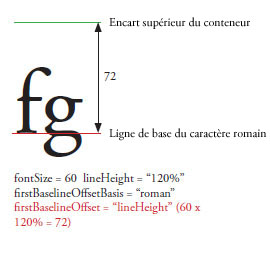
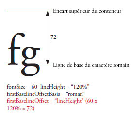
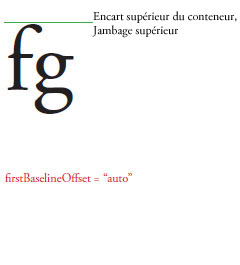
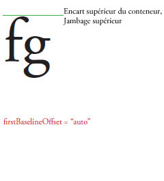
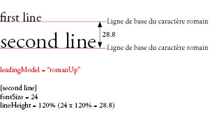
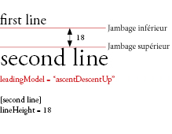
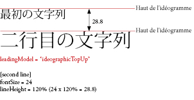
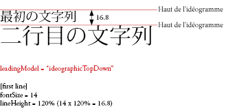
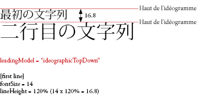

| Package | flashx.textLayout.container |
| Classe | public class ContainerController |
| Héritage | ContainerController |
| Implémente | IInteractionEventHandler, ITextLayoutFormat, ISandboxSupport |
| Version du langage: | ActionScript 3.0 |
| Versions du moteur d’exécution: | Flash Player 10, AIR 1.5 |

Eléments de l’API associés
flashx.textLayout.elements.TextFlow
flash.text.engine.TextLine
 Masquer les propriétés publiques héritées
Masquer les propriétés publiques héritées Afficher les propriétés publiques héritées
Afficher les propriétés publiques héritées| Propriété | Défini par | ||
|---|---|---|---|
| absoluteStart : int [lecture seule]
Renvoie le premier caractère dans le conteneur. | ContainerController | ||
| alignmentBaseline : *
TextLayoutFormat : spécifie la ligne de base sur laquelle la ligne de base dominante s’aligne. | ContainerController | ||
| backgroundAlpha : *
TextLayoutFormat : valeur alpha (transparence) pour l’arrière-plan (adopte la valeur par défaut si undefined pendant la cascade). | ContainerController | ||
| backgroundColor : *
TextLayoutFormat : couleur d’arrière-plan du texte (adopte la valeur par défaut si undefined pendant la propagation en cascade). | ContainerController | ||
| baselineShift : *
TextLayoutFormat : valeur de décalage de la ligne de base par rapport à la valeur dominantBaseline. | ContainerController | ||
| blockProgression : *
TextLayoutFormat : spécifie la progression verticale ou horizontale du positionnement de la ligne. | ContainerController | ||
| breakOpportunity : *
TextLayoutFormat : contrôle l’autorisation des sauts de ligne lors de la séparation de l’habillage du texte en plusieurs lignes. | ContainerController | ||
| cffHinting : *
TextLayoutFormat : type de repère CFF utilisé pour ce texte. | ContainerController | ||
| clearFloats : *
TextLayoutFormat : contrôle la manière dont le texte enveloppe un élément flottant. | ContainerController | ||
| color : *
TextLayoutFormat : couleur du texte. | ContainerController | ||
| columnCount : *
TextLayoutFormat : nombre de colonnes de texte (adopte la valeur par défaut si la valeur est undefined pendant la propagation en cascade). | ContainerController | ||
| columnGap : *
TextLayoutFormat : spécifie la quantité d’espace de gouttière, en pixels, à laisser entre les colonnes (adopte la valeur par défaut si undefined pendant la propagation en cascade). | ContainerController | ||
| columnState : ColumnState [lecture seule]
Renvoie un objet ColumnState, qui décrit le nombre et les caractéristiques des colonnes dans le conteneur. | ContainerController | ||
| columnWidth : *
TextLayoutFormat : largeur de colonne en pixels (adopte la valeur par défaut si undefined pendant la propagation en cascade). | ContainerController | ||
| compositionHeight : Number [lecture seule]
Renvoie l’étendue verticale autorisée pour du texte à l’intérieur du conteneur. | ContainerController | ||
| compositionWidth : Number [lecture seule]
Renvoie l’étendue horizontale autorisée pour le texte à l’intérieur du conteneur. | ContainerController | ||
| computedFormat : flashx.textLayout.formats:ITextLayoutFormat [lecture seule]
Renvoie une occurrence de l’interface ITextLayoutFormat avec les attributs appliqués à ce conteneur, y compris les attributs hérités de son élément racine. | ContainerController | ||
 | constructor : Object
Référence à l’objet de classe ou à la fonction constructeur d’une occurrence donnée d’un objet. | Object | |
| container : Sprite [lecture seule]
Renvoie l’objet d’affichage du conteneur qui contient les lignes de texte pour cette occurrence ContainerController. | ContainerController | ||
| containerControllerInitialFormat : flashx.textLayout.formats:ITextLayoutFormat [statique] | ContainerController | ||
| coreStyles : Object [lecture seule] Renvoie les styles coreStyles sur cet objet ContainerController. | ContainerController | ||
| digitCase : *
TextLayoutFormat : le type de casse de chiffres utilisée pour ce texte. | ContainerController | ||
| digitWidth : *
TextLayoutFormat : type de largeur de chiffres utilisée pour ce texte. | ContainerController | ||
| direction : *
TextLayoutFormat : spécifie le niveau d’intégration bidirectionnelle par défaut du texte dans le bloc de texte. | ContainerController | ||
| dominantBaseline : *
TextLayoutFormat : spécifie la ligne de base de l’élément s’alignant sur alignmentBaseline pour déterminer la position verticale de l’élément sur la ligne. | ContainerController | ||
| firstBaselineOffset : *
TextLayoutFormat : spécifie la position de ligne de base de la première ligne du conteneur. | ContainerController | ||
| flowComposer : IFlowComposer [lecture seule]
Renvoie l’objet de composition d’enchaînement qui compose et souligne le texte dans le conteneur qui est géré par le contrôleur. | ContainerController | ||
| fontFamily : *
TextLayoutFormat : nom de la police à utiliser, ou liste de noms de police séparés par une virgule. | ContainerController | ||
| fontLookup : *
TextLayoutFormat : recherche de police à utiliser. | ContainerController | ||
| fontSize : *
TextLayoutFormat : taille du texte en pixels. | ContainerController | ||
| fontStyle : *
TextLayoutFormat : style du texte. | ContainerController | ||
| fontWeight : *
TextLayoutFormat : épaisseur du texte. | ContainerController | ||
| format : flashx.textLayout.formats:ITextLayoutFormat
Stocke l’objet ITextLayoutFormat qui contient les attributs de ce conteneur. | ContainerController | ||
| horizontalScrollPolicy : String
Spécifie les règles de défilement horizontal, que vous pouvez définir en affectant l’une des constantes de la classe ScrollPolicy : ON, OFF ou AUTO. | ContainerController | ||
| horizontalScrollPosition : Number Spécifie l’emplacement de défilement horizontal actuel sur la scène. | ContainerController | ||
| interactionManager : ISelectionManager [lecture seule]
Le gestionnaire InteractionManager associé à cet objet TextFlow. | ContainerController | ||
| justificationRule : *
TextLayoutFormat : règle utilisée pour justifier le texte dans un paragraphe. | ContainerController | ||
| justificationStyle : *
TextLayoutFormat : style utilisé pour la justification du paragraphe. | ContainerController | ||
| kerning : *
TextLayoutFormat : le crénage ajuste les pixels entre certaines paires de caractères pour améliorer la lisibilité. | ContainerController | ||
| leadingModel : *
TextLayoutFormat : spécifie le modèle d’interlignage, qui est une combinaison de la base et de la direction de l’interlignage. | ContainerController | ||
| ligatureLevel : *
TextLayoutFormat : contrôle laquelle des ligatures qui sont définies dans la police peut être utilisée dans le texte. | ContainerController | ||
| lineBreak : *
TextLayoutFormat : contrôle le retour à la ligne dans le conteneur (adopte la valeur par défaut si undefined pendant cascade). | ContainerController | ||
| lineHeight : *
TextLayoutFormat : contrôles d’interlignage pour le texte. | ContainerController | ||
| lineThrough : *
TextLayoutFormat : si la valeur est true, applique le style de formatage barré, une ligne au milieu du texte. | ContainerController | ||
| linkActiveFormat : *
TextLayoutFormat : définit les attributs de mise en forme utilisés pour les liens à l’état normal. | ContainerController | ||
| linkHoverFormat : *
TextLayoutFormat : définit les attributs de mise en forme utilisés pour les liens à l’état pointé, c’est-à-dire lorsque l’utilisateur survole un lien avec la souris. | ContainerController | ||
| linkNormalFormat : *
TextLayoutFormat : définit les attributs de mise en forme utilisés pour les liens à l’état normal. | ContainerController | ||
| listAutoPadding : *
TextLayoutFormat : spécifie un retrait automatique pour le bord de début des listes, lorsque la valeur d’espacement de la liste de ce côté est auto. | ContainerController | ||
| listMarkerFormat : *
TextLayoutFormat : définit les marqueurs de liste d’attributs de mise en forme. | ContainerController | ||
| listStylePosition : *
TextLayoutFormat : les valeurs valides sont ListStylePosition.INSIDE, ListStylePosition.OUTSIDE et FormatValue.INHERIT. La valeur par défaut est undefined, ce qui indique qu’elle n’est pas définie. Si lors de la propagation en cascade, la valeur est undefined, cette propriété héritera ses valeurs d’un ancêtre. | ContainerController | ||
| listStyleType : *
TextLayoutFormat : les valeurs valides sont ListStyleType.UPPER_ALPHA, ListStyleType.LOWER_ALPHA, ListStyleType.UPPER_ROMAN, ListStyleType.LOWER_ROMAN, ListStyleType.NONE, ListStyleType.DISC, ListStyleType.CIRCLE, ListStyleType.SQUARE, ListStyleType.BOX, ListStyleType.CHECK, ListStyleType.DIAMOND, ListStyleType.HYPHEN, ListStyleType.ARABIC_INDIC, ListStyleType.BENGALI, ListStyleType.DECIMAL, ListStyleType.DECIMAL_LEADING_ZERO, ListStyleType.DEVANAGARI, ListStyleType.GUJARATI, ListStyleType.GURMUKHI, ListStyleType.KANNADA, ListStyleType.PERSIAN, ListStyleType.THAI, ListStyleType.URDU, ListStyleType.CJK_EARTHLY_BRANCH, ListStyleType.CJK_HEAVENLY_STEM, ListStyleType.HANGUL, ListStyleType.HANGUL_CONSTANT, ListStyleType.HIRAGANA, ListStyleType.HIRAGANA_IROHA, ListStyleType.KATAKANA, ListStyleType.KATAKANA_IROHA, ListStyleType.LOWER_ALPHA, ListStyleType.LOWER_GREEK, ListStyleType.LOWER_LATIN, ListStyleType.UPPER_ALPHA, ListStyleType.UPPER_GREEK, ListStyleType.UPPER_LATIN et FormatValue.INHERIT. La valeur par défaut est undefined, ce qui indique qu’elle n’est pas définie. Si lors de la propagation en cascade, la valeur est undefined, cette propriété héritera ses valeurs d’un ancêtre. | ContainerController | ||
| locale : *
TextLayoutFormat : paramètres régionaux du texte. | ContainerController | ||
| paddingBottom : *
TextLayoutFormat : encart inférieur en pixels. | ContainerController | ||
| paddingLeft : *
TextLayoutFormat : encart à gauche en pixels. | ContainerController | ||
| paddingRight : *
TextLayoutFormat : encart à droite en pixels. | ContainerController | ||
| paddingTop : *
TextLayoutFormat : encart supérieur en pixels. | ContainerController | ||
| paragraphEndIndent : *
TextLayoutFormat : nombre qui indique, en pixels, la valeur de retrait du bord de la fin du paragraphe. | ContainerController | ||
| paragraphSpaceAfter : *
TextLayoutFormat : un nombre qui spécifie la quantité d’espace, en pixels, à laisser après le paragraphe. | ContainerController | ||
| paragraphSpaceBefore : *
TextLayoutFormat : nombre qui spécifie la quantité d’espace, en pixels, à conserver avant le paragraphe. | ContainerController | ||
| paragraphStartIndent : *
TextLayoutFormat : nombre qui indique, en pixels, la valeur de retrait du bord du début du paragraphe. | ContainerController | ||
| renderingMode : *
TextLayoutFormat : mode de rendu utilisé pour ce texte. | ContainerController | ||
| rootElement : ContainerFormattedElement [lecture seule]
Renvoie l’élément racine qui s’affiche dans le conteneur. | ContainerController | ||
| styleName : *
TextLayoutFormat : attribue une classe d’identification à l’élément, ce qui permet de définir le style de l’élément en référençant la propriété styleName. | ContainerController | ||
| styles : Object [lecture seule] Renvoie les styles sur cet objet ContainerController. | ContainerController | ||
| tabStops : *
TextLayoutFormat : spécifie les taquets de tabulation associés au paragraphe. | ContainerController | ||
| textAlign : *
TextLayoutFormat : alignement des lignes du paragraphe par rapport au conteneur. | ContainerController | ||
| textAlignLast : *
TextLayoutFormat : alignement de la dernière (ou unique) ligne dans le paragraphe par rapport au conteneur dans un texte justifié. | ContainerController | ||
| textAlpha : *
TextLayoutFormat : valeur alpha (transparence) du texte. | ContainerController | ||
| textDecoration : *
TextLayoutFormat : décoration du texte. | ContainerController | ||
| textFlow : flashx.textLayout.elements:TextFlow [lecture seule]
Renvoie l’objet TextFlow dont le contenu s’affiche dans le conteneur. | ContainerController | ||
| textIndent : *
TextLayoutFormat : nombre qui indique la quantité, en pixels, pour mettre en retrait la première ligne du paragraphe. | ContainerController | ||
| textJustify : *
TextLayoutFormat : spécifie des options de justification de texte. | ContainerController | ||
| textLength : int [lecture seule] Renvoie le nombre total de caractères dans le conteneur. | ContainerController | ||
| textRotation : *
TextLayoutFormat : détermine le nombre de degrés de rotation de ce texte. | ContainerController | ||
| trackingLeft : *
TextLayoutFormat : nombre de pixels (ou pourcentage de taille fontSize, comme 120 %) indiquant la quantité de l’approche (crénage manuel) à appliquer à gauche de chaque caractère. | ContainerController | ||
| trackingRight : *
TextLayoutFormat : nombre de pixels (ou pourcentage de taille fontSize, comme 120 %) indiquant la quantité de l’approche (crénage manuel) à appliquer à droite de chaque caractère. | ContainerController | ||
| typographicCase : *
TextLayoutFormat : le type de casse typographique utilisée pour ce texte. | ContainerController | ||
| userStyles : Object Permet de lire et d’écrire les styles utilisateur sur un objet ContainerController. | ContainerController | ||
| verticalAlign : *
TextLayoutFormat : alignement vertical ou justification (adopte la valeur par défaut si undefined pendant la propagation en cascade). | ContainerController | ||
| verticalScrollPolicy : String Spécifie les règles de défilement vertical que vous pouvez définir en affectant l’une des constantes de la classe ScrollPolicy : ON, OFF ou AUTO. | ContainerController | ||
| verticalScrollPosition : Number Indique l’emplacement du défilement vertical sur la scène. | ContainerController | ||
| whiteSpaceCollapse : *
TextLayoutFormat : réduit ou conserve les espaces lors de l’importation de texte dans un TextFlow. | ContainerController | ||
| wordSpacing : *
TextLayoutFormat : spécifie les espacements optimal, minimal et maximal (comme multiplicateur de la largeur d’un espace normal) entres les mots à utiliser lors de la justification. | ContainerController | ||
| Méthode | Défini par | ||
|---|---|---|---|
ContainerController(container:Sprite, compositionWidth:Number = 100, compositionHeight:Number = 100)
Constructeur : crée une occurrence ContainerController. | ContainerController | ||
Traite l’événement Event.ACTIVATE lorsque le client gère les événements. | ContainerController | ||
Gérer un événement scroll au cours d’une sélection « faire glisser ». | ContainerController | ||
Appelée pour demander aux clients de commencer l’avance rapide des événements mouseup et mousemove de l’extérieur d’un sandbox de sécurité. | ContainerController | ||
Désactive le style spécifié par la propriété styleProp à partir de cet objet FlowElement. | ContainerController | ||
Traite l’événement Event.DEACTIVATE lorsque le client gère les événements. | ContainerController | ||
Traite un événement de modification (CUT, COPY, PASTE, SELECT_ALL) lorsque le client gère les événements. | ContainerController | ||
Appelée pour informer les clients que l’avance rapide des événements mouseup et mousemove de l’extérieur d’un sandbox de sécurité n’est plus nécessaire. | ContainerController | ||
Traite les événements FocusEvent.KEY_FOCUS_CHANGE et FocusEvent.MOUSE_FOCUS_CHANGE lorsque le client gère les événements. | ContainerController | ||
Traite l’événement FocusEvent.FOCUS_IN lorsque le client gère les événements. | ContainerController | ||
Traite l’événement FocusEvent.FOCUS_OUT lorsque le client gère les événements. | ContainerController | ||
Renvoie la zone occupée par le texte, telle qu’indiquée par la dernière opération de composition ou de mise à jour. | ContainerController | ||
La distance de défilement nécessaire pour faire défiler vers le haut ou vers le bas par le nombre de lignes spécifié. | ContainerController | ||
Renvoie la valeur du style spécifié par le paramètre styleProp. | ContainerController | ||
|
Indique si la propriété spécifiée d’un objet est définie. | Object | |
Traite l’événement IMEEvent.IME_START_COMPOSITION lorsque le client gère les événements. | ContainerController | ||
Désigne tout le texte dans ce conteneur comme requérant une composition. | ContainerController | ||
Détermine si le conteneur contient du texte qui nécessite une composition. | ContainerController | ||
|
Indique si une occurrence de la classe Object figure dans la chaîne de prototype de l’objet spécifié en tant que paramètre. | Object | |
Traite l’événement KeyboardEvent.KEY_DOWN lorsque le client gère les événements. | ContainerController | ||
Traite l’événement FocusEvent.KEY_FOCUS_CHANGE lorsque le client gère les événements. | ContainerController | ||
Traite l’événement keyboard.KEY_UP lorsque le client gère les événements. | ContainerController | ||
Traite l’événement MENU_SELECT ContextMenuEvent. lorsque le client gère les événements. | ContainerController | ||
Traite l’événement MouseEvent.DOUBLE_CLICK lorsque le client gère les événements. | ContainerController | ||
Traite l’événement MouseEvent.MOUSE_DOWN lorsque le client gère les événements. | ContainerController | ||
Traite l’événement MouseEvent.MOUSE_MOVE lorsque le client gère les événements. | ContainerController | ||
Appel du client pour transférer un événement mouseMove de l’extérieur d’un sandbox de sécurité. | ContainerController | ||
Traite l’événement MouseEvent.MOUSE_OUT lorsque le client gère les événements. | ContainerController | ||
Traite l’événement MouseEvent.MOUSE_OVER lorsque le client gère les événements. | ContainerController | ||
Traite l’événement MouseEvent.MOUSE_UP lorsque le client gère les événements. | ContainerController | ||
Appel du client pour transférer un événement mouseUp de l’extérieur d’un sandbox de sécurité. | ContainerController | ||
Traite l’événement MouseEvent.MOUSE_WHEEL lorsque le client gère les événements. | ContainerController | ||
|
Indique si la propriété spécifiée existe et est énumérable. | Object | |
Fait défiler afin que la plage du texte soit visible dans le conteneur. | ContainerController | ||
Définit la plage du texte sélectionné dans un composant implémentant ITextSupport. | ContainerController | ||
Définit la largeur et la hauteur autorisées du texte dans le conteneur. | ContainerController | ||
|
Définit la disponibilité d’une propriété dynamique pour les opérations en boucle. | Object | |
Définit la valeur du style spécifié par le paramètre styleProp sur la valeur spécifiée par le paramètre newValue. | ContainerController | ||
Traite l’événement SoftKeyboardEvent.SOFT_KEYBOARD_ACTIVATING lorsque le client gère les événements. | ContainerController | ||
Traite l’événement TextEvent.TEXT_INPUT lorsque le client gère les événements. | ContainerController | ||
|
Renvoie la représentation de chaîne de cet objet, formatée selon les paramètres régionaux en vigueur. | Object | |
|
Renvoie la représentation sous forme de chaîne de l’objet spécifié. | Object | |
|
Renvoie la valeur primitive de l’objet spécifié. | Object | |
| Méthode | Défini par | ||
|---|---|---|---|
Ajoute un objet flash.display.Shape dans l’arrière-plan duquel des formes (telles que la couleur d’arrière-plan) sont dessinées. | ContainerController | ||
addInlineGraphicElement(parent:DisplayObjectContainer, inlineGraphicElement:DisplayObject, index:int):void
Ajoute un objet flash.display.DisplayObject comme descendant de parent. | ContainerController | ||
Ajoute un objet flash.display.DisplayObjectContainer auquel des formes de sélection (telles que la mise en surbrillance de la sélection de bloc, un curseur, etc. ) sont ajoutées. | ContainerController | ||
Ajoute un objet flash.text.engine.TextLine comme descendant de container. | ContainerController | ||
Crée un menu contextuel pour l’objet ContainerController. | ContainerController | ||
Récupère l’index dans lequel la première ligne de texte doit apparaître dans son parent. | ContainerController | ||
Supprime un objet flash.display.Shape dans l’arrière-plan duquel des formes (telles que la couleur d’arrière-plan) sont dessinées. | ContainerController | ||
Supprime un objet flash.display.DisplayObject de son parent. | ContainerController | ||
Supprime l’objet flash.display.DisplayObjectContainer qui contient des formes de sélection (telles que la mise en surbrillance de la sélection de bloc, un curseur, etc.) | ContainerController | ||
Supprime un objet flash.text.engine.TextLine de son parent. | ContainerController | ||
En cas de défilement, définit le rectangle de défilement en fonction du rectangle conteneur afin que toutes les lignes qui ne sont pas entièrement visibles soient découpées dans la zone défilable. | ContainerController | ||
_mouseWheelListenerAttached | propriété |
tlf_internal var _mouseWheelListenerAttached:Boolean = falseabsoluteStart | propriété |
absoluteStart:int [lecture seule] | Version du langage: | ActionScript 3.0 |
| Versions du moteur d’exécution: | Flash Player 10, AIR 1.5 |
Renvoie le premier caractère dans le conteneur. Si ce n’est pas le premier conteneur dans l’enchaînement, cette valeur est mise à jour lorsque le texte est composé, c’est-à-dire lorsque les méthodes compose() ou updateAllControllers() de l’interface IFlowComposer sont appelées.
Implémentation
public function get absoluteStart():intEléments de l’API associés
alignmentBaseline | propriété |
alignmentBaseline:*| Version du langage: | ActionScript 3.0 |
| Versions du moteur d’exécution: | Flash Player 10, AIR 1.5 |
TextLayoutFormat : spécifie la ligne de base sur laquelle la ligne de base dominante s’aligne. Par exemple, si vous définissez dominantBaseline sur ASCENT, la définition de alignmentBaseline sur DESCENT aligne le haut du texte sur la ligne de base DESCENT ou en dessous. Le plus grand élément de la ligne détermine en général les lignes de base.

Les valeurs valides sont TextBaseline.ROMAN, TextBaseline.ASCENT, TextBaseline.DESCENT, TextBaseline.IDEOGRAPHIC_TOP, TextBaseline.IDEOGRAPHIC_CENTER, TextBaseline.IDEOGRAPHIC_BOTTOM, TextBaseline.USE_DOMINANT_BASELINE et FormatValue.INHERIT.
La valeur par défaut est undefined, ce qui indique qu’elle n’est pas définie.
Si lors de la propagation en cascade, la valeur est undefined, cette propriété héritera ses valeurs d’un ancêtre. Si aucun ancêtre n’a défini cette propriété, elle aura la valeur TextBaseline.USE_DOMINANT_BASELINE.
Implémentation
public function get alignmentBaseline():* public function set alignmentBaseline(value:any):voidValeur émise
RangeError — lorsque la valeur définie n’est pas située dans les limites de cette propriété
|
Eléments de l’API associés
backgroundAlpha | propriété |
backgroundAlpha:*| Version du langage: | ActionScript 3.0 |
| Versions du moteur d’exécution: | Flash Player 10, AIR 1.5 |
TextLayoutFormat : valeur alpha (transparence) pour l’arrière-plan (adopte la valeur par défaut si undefined pendant la cascade). La valeur 0 est entièrement transparente et la valeur 1 est complètement opaque. Les objets d’affichage où alpha est défini sur 0 sont actifs, même s’ils sont invisibles.
Les valeurs valides sont les nombres compris entre 0 et 1, et FormatValue.INHERIT.
La valeur par défaut est undefined, ce qui indique qu’elle n’est pas définie.
Si lors de la propagation en cascade, la valeur est undefined, cette propriété aura la valeur 1.
Implémentation
public function get backgroundAlpha():* public function set backgroundAlpha(value:any):voidValeur émise
RangeError — lorsque la valeur définie n’est pas située dans les limites de cette propriété
|
backgroundColor | propriété |
backgroundColor:*| Version du langage: | ActionScript 3.0 |
| Versions du moteur d’exécution: | Flash Player 10, AIR 1.5 |
TextLayoutFormat : couleur d’arrière-plan du texte (adopte la valeur par défaut si undefined pendant la propagation en cascade). Il peut s’agir de la valeur de la constante BackgroundColor.TRANSPARENT ou d’une valeur hexadécimale qui spécifie les trois valeurs RVB à 8 bits (rouge, vert, bleu), par exemple, 0xFF0000 est rouge et 0x00FF00 est vert.
Les valeurs valides en tant que chaîne sont BackgroundColor.TRANSPARENT, FormatValue.INHERIT et les nombres uint compris entre 0x0 et 0xffffffff.
La valeur par défaut est undefined, ce qui indique qu’elle n’est pas définie.
Si lors de la propagation en cascade la valeur est undefined, cette propriété aura la valeur BackgroundColor.TRANSPARENT.
Implémentation
public function get backgroundColor():* public function set backgroundColor(value:any):voidValeur émise
RangeError — lorsque la valeur définie n’est pas située dans les limites de cette propriété
|
Eléments de l’API associés
baselineShift | propriété |
baselineShift:*| Version du langage: | ActionScript 3.0 |
| Versions du moteur d’exécution: | Flash Player 10, AIR 1.5 |
TextLayoutFormat : valeur de décalage de la ligne de base par rapport à la valeur dominantBaseline. Les unités sont en pixels, ou un pourcentage de fontSize (dans ce cas, entrez une valeur de chaîne, comme 140 %). Les valeurs positives décalent la ligne vers le haut pour le texte horizontal (à droite pour le texte vertical) et les valeurs négatives décalent la ligne vers le bas pour le texte horizontal (à gauche pour le texte vertical).
Les valeurs valides sont BaselineShift.SUPERSCRIPT, BaselineShift.SUBSCRIPT et FormatValue.INHERIT.
Les valeurs valides sous forme de nombre sont comprises entre -1000 et 1000.
Les valeurs en pourcentage sont comprises entre -1000 et 1000.
La valeur par défaut est undefined, ce qui indique qu’elle n’est pas définie.
Si lors de la propagation en cascade, la valeur est undefined, cette propriété héritera ses valeurs d’un ancêtre. Si aucun ancêtre n’a défini cette propriété, elle aura une valeur de 0.0.
Implémentation
public function get baselineShift():* public function set baselineShift(value:any):voidValeur émise
RangeError — lorsque la valeur définie n’est pas située dans les limites de cette propriété
|
Eléments de l’API associés
blockProgression | propriété |
blockProgression:*| Version du langage: | ActionScript 3.0 |
| Versions du moteur d’exécution: | Flash Player 10, AIR 1.5 |
TextLayoutFormat : spécifie la progression verticale ou horizontale du positionnement de la ligne. Les lignes sont placées de haut en bas (BlockProgression.TB, pour le texte horizontal) ou de droite à gauche (BlockProgression.RL, pour le texte vertical).
Les valeurs valides sont BlockProgression.RL, BlockProgression.TB et FormatValue.INHERIT.
La valeur par défaut est undefined, ce qui indique qu’elle n’est pas définie.
Si lors de la propagation en cascade, la valeur est undefined, cette propriété héritera ses valeurs d’un ancêtre. Si aucun ancêtre n’a défini cette propriété, elle aura la valeur BlockProgression.TB.
Implémentation
public function get blockProgression():* public function set blockProgression(value:any):voidValeur émise
RangeError — lorsque la valeur définie n’est pas située dans les limites de cette propriété
|
Eléments de l’API associés
breakOpportunity | propriété |
breakOpportunity:*| Version du langage: | ActionScript 3.0 |
| Versions du moteur d’exécution: | Flash Player 10, AIR 1.5 |
TextLayoutFormat : contrôle l’autorisation des sauts de ligne lors de la séparation de l’habillage du texte en plusieurs lignes. Défini sur BreakOpportunity.AUTO pour diviser le texte normalement. Défini sur BreakOpportunity.NONE pour ne pas diviser le texte à moins que le texte ne dépasse la mesure et qu’il n’existe pas d’autres endroits auquel diviser la ligne. Défini sur BreakOpportunity.tout pour permettre le saut de ligne à n’importe quel endroit, plutôt qu’entre les mots. Défini sur BreakOpportunity.ALL pour placer chaque groupe typographique sur une ligne distincte (utile pour le texte d’un chemin).
Les valeurs valides sont BreakOpportunity.ALL, BreakOpportunity.ANY, BreakOpportunity.AUTO, BreakOpportunity.NONE et FormatValue.INHERIT.
La valeur par défaut est undefined, ce qui indique qu’elle n’est pas définie.
Si lors de la propagation en cascade, la valeur est undefined, cette propriété héritera ses valeurs d’un ancêtre. Si aucun ancêtre n’a défini cette propriété, elle aura la valeur BreakOpportunity.AUTO.
Implémentation
public function get breakOpportunity():* public function set breakOpportunity(value:any):voidValeur émise
RangeError — lorsque la valeur définie n’est pas située dans les limites de cette propriété
|
Eléments de l’API associés
cffHinting | propriété |
cffHinting:*| Version du langage: | ActionScript 3.0 |
| Versions du moteur d’exécution: | Flash Player 10, AIR 1.5 |
TextLayoutFormat : type de repère CFF utilisé pour ce texte. Les repères CFF déterminent si l’exécution de Flash force les souches horizontales fortes à intégrer une grille de sous-pixels ou non. Cette propriété s’applique uniquement si la propriété renderingMode est définie sur RenderingMode.CFF et que la police est intégrée (la propriété fontLookup est définie sur FontLookup.EMBEDDED_CFF). Sur des écrans de petite taille, les repères produisent un texte clair et lisible pour les lecteurs humains.
Les valeurs valides sont CFFHinting.NONE, CFFHinting.HORIZONTAL_STEM et FormatValue.INHERIT.
La valeur par défaut est undefined, ce qui indique qu’elle n’est pas définie.
Si lors de la propagation en cascade, la valeur est undefined, cette propriété héritera ses valeurs d’un ancêtre. Si aucun ancêtre n’a défini cette propriété, elle aura la valeur CFFHinting.HORIZONTAL_STEM.
Implémentation
public function get cffHinting():* public function set cffHinting(value:any):voidValeur émise
RangeError — lorsque la valeur définie n’est pas située dans les limites de cette propriété
|
Eléments de l’API associés
clearFloats | propriété |
clearFloats:*| Version du langage: | ActionScript 3.0 |
| Versions du moteur d’exécution: | Flash Player 10, AIR 1.5 |
TextLayoutFormat : contrôle la manière dont le texte enveloppe un élément flottant. La valeur none permet d’ajuster le plus étroitement possible le texte autour d’un élément flottant. Si la valeur left (gauche) est définie, le texte ignorera toute partie du conteneur possédant un élément flottant gauche, tandis que si la valeur right (droite) est définie, le texte ignorera toute partie du conteneur possédant un élément flottant droit. Si ces deux valeurs sont définies, le texte ignorera tout élément flottant.
Les valeurs valides sont ClearFloats.START, ClearFloats.END, ClearFloats.LEFT, ClearFloats.RIGHT, ClearFloats.BOTH, ClearFloats.NONE et FormatValue.INHERIT.
La valeur par défaut est undefined, ce qui indique qu’elle n’est pas définie.
Si lors de la propagation en cascade, la valeur est undefined, cette propriété aura la valeur ClearFloats.NONE.
Implémentation
public function get clearFloats():* public function set clearFloats(value:any):voidValeur émise
RangeError — lorsque la valeur définie n’est pas située dans les limites de cette propriété
|
Eléments de l’API associés
color | propriété |
color:*| Version du langage: | ActionScript 3.0 |
| Versions du moteur d’exécution: | Flash Player 10, AIR 1.5 |
TextLayoutFormat : couleur du texte. Nombre hexadécimal qui spécifie les trois valeurs RVB à 8 bits (rouge, vert, bleu) ; par exemple, 0xFF0000 est rouge et 0x00FF00 est vert.
La valeur par défaut est undefined, ce qui indique qu’elle n’est pas définie.
Si lors de la propagation en cascade, la valeur est undefined, cette propriété héritera ses valeurs d’un ancêtre. Si aucun ancêtre n’a défini cette propriété, elle aura la valeur 0.
Implémentation
public function get color():* public function set color(value:any):voidValeur émise
RangeError — lorsque la valeur définie n’est pas située dans les limites de cette propriété
|
columnCount | propriété |
columnCount:*| Version du langage: | ActionScript 3.0 |
| Versions du moteur d’exécution: | Flash Player 10, AIR 1.5 |
TextLayoutFormat : nombre de colonnes de texte (adopte la valeur par défaut si la valeur est undefined pendant la propagation en cascade). Le numéro de la colonne prévaut sur les autres paramètres de colonne. La valeur est un nombre entier ou FormatValue.AUTO si elle n’est pas spécifiée. Si le compte columnCount n’est pas spécifié, la largeur columnWidth est utilisée pour créer autant de colonnes que le conteneur peut en contenir.
Les valeurs valides en tant que chaîne sont FormatValue.AUTO, FormatValue.INHERIT et les ints de 1 à 50.
La valeur par défaut est undefined, ce qui indique qu’elle n’est pas définie.
Si lors de la propagation en cascade la valeur est undefined, cette propriété aura la valeur FormatValue.AUTO.
Implémentation
public function get columnCount():* public function set columnCount(value:any):voidValeur émise
RangeError — lorsque la valeur définie n’est pas située dans les limites de cette propriété
|
Eléments de l’API associés
columnGap | propriété |
columnGap:*| Version du langage: | ActionScript 3.0 |
| Versions du moteur d’exécution: | Flash Player 10, AIR 1.5 |
TextLayoutFormat : spécifie la valeur de l’espace de gouttière, en pixels, à laisser entre les colonnes (adopte la valeur par défaut si undefined pendant la propagation en cascade). La valeur est un nombre
Les valeurs valides sont les nombres compris entre 0 et 1000, et FormatValue.INHERIT.
La valeur par défaut est undefined, ce qui indique qu’elle n’est pas définie.
Si lors de la propagation en cascade, la valeur est undefined, cette propriété aura la valeur 20.
Implémentation
public function get columnGap():* public function set columnGap(value:any):voidValeur émise
RangeError — lorsque la valeur définie n’est pas située dans les limites de cette propriété
|
columnState | propriété |
columnState:ColumnState [lecture seule] | Version du langage: | ActionScript 3.0 |
| Versions du moteur d’exécution: | Flash Player 10, AIR 1.5 |
Renvoie un objet ColumnState, qui décrit le nombre et les caractéristiques des colonnes dans le conteneur. Ces valeurs sont mises à jour lorsque le texte est recomposé, consécutivement à l’interface IFlowComposer.compose() ou IFlowComposer.updateAllControllers().
Implémentation
public function get columnState():ColumnStateEléments de l’API associés
columnWidth | propriété |
columnWidth:*| Version du langage: | ActionScript 3.0 |
| Versions du moteur d’exécution: | Flash Player 10, AIR 1.5 |
TextLayoutFormat : largeur de colonne en pixels (adopte la valeur par défaut si undefined pendant la propagation en cascade). Si vous spécifiez la largeur des colonnes, mais pas le nombre, l’objet TextLayout va créer autant de colonnes de cette largeur que possible, à partir des paramètres columnGap et de la largeur du conteneur. Tout espace restant est laissé après la dernière colonne. La valeur est un nombre.
Les valeurs valides en tant que chaîne sont FormatValue.AUTO, FormatValue.INHERIT et les nombres compris entre 0 et 8000.
La valeur par défaut est undefined, ce qui indique qu’elle n’est pas définie.
Si lors de la propagation en cascade la valeur est undefined, cette propriété aura la valeur FormatValue.AUTO.
Implémentation
public function get columnWidth():* public function set columnWidth(value:any):voidValeur émise
RangeError — lorsque la valeur définie n’est pas située dans les limites de cette propriété
|
Eléments de l’API associés
compositionHeight | propriété |
compositionHeight:Number [lecture seule] | Version du langage: | ActionScript 3.0 |
| Versions du moteur d’exécution: | Flash Player 10, AIR 1.5 |
Renvoie l’étendue verticale autorisée pour du texte à l’intérieur du conteneur. La valeur est spécifiée en pixels.
Implémentation
public function get compositionHeight():NumberEléments de l’API associés
compositionWidth | propriété |
compositionWidth:Number [lecture seule] | Version du langage: | ActionScript 3.0 |
| Versions du moteur d’exécution: | Flash Player 10, AIR 1.5 |
Renvoie l’étendue horizontale autorisée pour le texte à l’intérieur du conteneur. La valeur est spécifiée en pixels.
Implémentation
public function get compositionWidth():NumberEléments de l’API associés
computedFormat | propriété |
computedFormat:flashx.textLayout.formats:ITextLayoutFormat [lecture seule] | Version du langage: | ActionScript 3.0 |
| Versions du moteur d’exécution: | Flash Player 10, AIR 1.5 |
Renvoie une occurrence de l’interface ITextLayoutFormat avec les attributs appliqués à ce conteneur, y compris les attributs hérités de son élément racine.
Implémentation
public function get computedFormat():flashx.textLayout.formats:ITextLayoutFormatEléments de l’API associés
container | propriété |
container:Sprite [lecture seule] | Version du langage: | ActionScript 3.0 |
| Versions du moteur d’exécution: | Flash Player 10, AIR 1.5 |
Renvoie l’objet d’affichage du conteneur qui contient les lignes de texte pour cette occurrence ContainerController.
Implémentation
public function get container():SpriteEléments de l’API associés
containerControllerInitialFormat | propriété |
containerControllerInitialFormat:flashx.textLayout.formats:ITextLayoutFormatImplémentation
public static function get containerControllerInitialFormat():flashx.textLayout.formats:ITextLayoutFormat public static function set containerControllerInitialFormat(value:flashx.textLayout.formats:ITextLayoutFormat):voidcoreStyles | propriété |
coreStyles:Object [lecture seule] | Version du langage: | ActionScript 3.0 |
| Versions du moteur d’exécution: | Flash Player 10, AIR 1.5 |
Renvoie les styles coreStyles sur cet objet ContainerController. Notez que la méthode Get effectue une copie du dictionnaire de styles principaux. L’objet renvoyé comprend les formats qui sont définis par TextLayoutFormat et qui se trouvent dans TextLayoutFormat.description. L’objet renvoyé se compose d’un tableau de paires nom de style-valeur.
Implémentation
public function get coreStyles():ObjectEléments de l’API associés
digitCase | propriété |
digitCase:*| Version du langage: | ActionScript 3.0 |
| Versions du moteur d’exécution: | Flash Player 10, AIR 1.5 |
TextLayoutFormat : le type de casse de chiffres utilisée pour ce texte. La définition de la valeur sur DigitCase.OLD_STYLE lettres minuscules se rapproche fonctionnalité et avec des jambages. Les chiffres sont espacés proportionnellement. Ce style n’est disponible que dans les caractères sélectionnés, le plus souvent dans une police supplémentaire ou spéciale. Le paramètre DigitCase.LINING a une hauteur en majuscules et est généralement à espacement fixe pour s’aligner dans les graphiques.

Les valeurs valides sont DigitCase.DEFAULT, DigitCase.LINING, DigitCase.OLD_STYLE et FormatValue.INHERIT.
La valeur par défaut est undefined, ce qui indique qu’elle n’est pas définie.
Si lors de la propagation en cascade, la valeur est undefined, cette propriété héritera ses valeurs d’un ancêtre. Si aucun ancêtre n’a défini cette propriété, elle aura la valeur DigitCase.DEFAULT.
Implémentation
public function get digitCase():* public function set digitCase(value:any):voidValeur émise
RangeError — lorsque la valeur définie n’est pas située dans les limites de cette propriété
|
Eléments de l’API associés
digitWidth | propriété |
digitWidth:*| Version du langage: | ActionScript 3.0 |
| Versions du moteur d’exécution: | Flash Player 10, AIR 1.5 |
TextLayoutFormat : type de largeur de chiffres utilisée pour ce texte. La valeur peut être DigitWidth.PROPORTIONAL, ce qui est la meilleure approche pour les nombres individuels, ou DigitWidth.TABULAR, qui est recommandé pour les nombres inclus dans les tableaux, diagrammes et lignes verticales.

Les valeurs valides sont DigitWidth.DEFAULT, DigitWidth.PROPORTIONAL, DigitWidth.TABULAR et FormatValue.INHERIT.
La valeur par défaut est undefined, ce qui indique qu’elle n’est pas définie.
Si lors de la propagation en cascade, la valeur est undefined, cette propriété héritera ses valeurs d’un ancêtre. Si aucun ancêtre n’a défini cette propriété, elle aura la valeur DigitWidth.DEFAULT.
Implémentation
public function get digitWidth():* public function set digitWidth(value:any):voidValeur émise
RangeError — lorsque la valeur définie n’est pas située dans les limites de cette propriété
|
Eléments de l’API associés
direction | propriété |
direction:*| Version du langage: | ActionScript 3.0 |
| Versions du moteur d’exécution: | Flash Player 10, AIR 1.5 |
TextLayoutFormat : spécifie le niveau d’intégration bidirectionnelle par défaut du texte dans le bloc de texte. Sens de lecture de gauche à droite, comme dans les scripts de style latin, ou de droite à gauche, comme en arabe ou en hébreu. Cette propriété affecte également le sens de la colonne lorsqu’elle est appliquée au niveau du conteneur. Les colonnes peuvent se lire de gauche à droite ou de droite à gauche, exactement comme du texte. Voici quelques exemples :

Les valeurs valides sont Direction.LTR, Direction.RTL et FormatValue.INHERIT.
La valeur par défaut est undefined, ce qui indique qu’elle n’est pas définie.
Si lors de la propagation en cascade, la valeur est undefined, cette propriété héritera ses valeurs d’un ancêtre. Si aucun ancêtre n’a défini cette propriété, elle aura la valeur Direction.LTR.
Implémentation
public function get direction():* public function set direction(value:any):voidValeur émise
RangeError — lorsque la valeur définie n’est pas située dans les limites de cette propriété
|
Eléments de l’API associés
dominantBaseline | propriété |
dominantBaseline:*| Version du langage: | ActionScript 3.0 |
| Versions du moteur d’exécution: | Flash Player 10, AIR 1.5 |
TextLayoutFormat : spécifie la ligne de base de l’élément s’alignant sur le alignmentBaseline pour déterminer la position verticale de l’élément sur la ligne. La valeur TextBaseline.AUTO sélectionne la ligne de base dominante en fonction de la propriété locale du paragraphe parent. Pour le chinois et le japonais, la valeur de ligne de base sélectionnée est TextBaseline.IDEOGRAPHIC_CENTER ; pour tous les autres, il s’agit de TextBaseline.ROMAN. Ces choix de base sont déterminés par le choix de police et la taille de police.
Les valeurs valides sont FormatValue.AUTO, TextBaseline.ROMAN, TextBaseline.ASCENT, TextBaseline.DESCENT, TextBaseline.IDEOGRAPHIC_TOP, TextBaseline.IDEOGRAPHIC_CENTER, TextBaseline.IDEOGRAPHIC_BOTTOM et FormatValue.INHERIT.
La valeur par défaut est undefined, ce qui indique qu’elle n’est pas définie.
Si lors de la propagation en cascade, la valeur est undefined, cette propriété héritera ses valeurs d’un ancêtre. Si aucun ancêtre n’a défini cette propriété, elle aura la valeur FormatValue.AUTO.
Implémentation
public function get dominantBaseline():* public function set dominantBaseline(value:any):voidValeur émise
RangeError — lorsque la valeur définie n’est pas située dans les limites de cette propriété
|
Eléments de l’API associés
firstBaselineOffset | propriété |
firstBaselineOffset:*| Version du langage: | ActionScript 3.0 |
| Versions du moteur d’exécution: | Flash Player 10, AIR 1.5 |
TextLayoutFormat : spécifie la position de ligne de base de la première ligne du conteneur. La ligne de base à laquelle cette propriété fait référence dépend de la langue définie au niveau du conteneur. Pour le chinois et le japonais, la valeur est TextBaseline.IDEOGRAPHIC_BOTTOM et pour toutes les autres langues, la valeur est TextBaseline.ROMAN La valeur du décalage entre l’encart supérieur (ou l’encart droit si la valeur de blockProgression est RL) du conteneur et la ligne de base de la première ligne peut être BaselineOffset.ASCENT, c’est-à-dire égale à la hauteur de la ligne,BaselineOffset.LINE_HEIGHT, c’est-à-dire égale à la hauteur de cette première ligne, ou n’importe quel nombre de valeur fixe pour indiquer une distance absolue. BaselineOffset.AUTO aligne la hauteur de la ligne sur l’encart supérieur du conteneur.
 
 

Les valeurs valides en tant que chaîne sont BaselineOffset.AUTO, BaselineOffset.ASCENT, BaselineOffset.LINE_HEIGHT, FormatValue.INHERIT et les nombres compris entre 0 et 1000.
La valeur par défaut est undefined, ce qui indique qu’elle n’est pas définie.
Si lors de la propagation en cascade, la valeur est undefined, cette propriété héritera ses valeurs d’un ancêtre. Si aucun ancêtre n’a défini cette propriété, elle aura la valeur BaselineOffset.AUTO.
Implémentation
public function get firstBaselineOffset():* public function set firstBaselineOffset(value:any):voidValeur émise
RangeError — lorsque la valeur définie n’est pas située dans les limites de cette propriété
|
Eléments de l’API associés
flowComposer | propriété |
flowComposer:IFlowComposer [lecture seule] | Version du langage: | ActionScript 3.0 |
| Versions du moteur d’exécution: | Flash Player 10, AIR 1.5 |
Renvoie l’objet de composition d’enchaînement qui compose et souligne le texte dans le conteneur qui est géré par le contrôleur.
Implémentation
public function get flowComposer():IFlowComposerEléments de l’API associés
fontFamily | propriété |
fontFamily:*| Version du langage: | ActionScript 3.0 |
| Versions du moteur d’exécution: | Flash Player 10, AIR 1.5 |
TextLayoutFormat : nom de la police à utiliser, ou liste de noms de police séparés par une virgule. Pour le rendu de l’élément, le moteur d’exécution Flash sélectionne la première police disponible dans la liste. Par exemple Arial, Helvetica, _sans oblige le lecteur à rechercher Arial, puis Helvetica si Arial est introuvable, puis _sans lorsque ces deux polices sont introuvables.
La valeur par défaut est undefined, ce qui indique qu’elle n’est pas définie.
Si lors de la propagation en cascade, la valeur est undefined, cette propriété héritera ses valeurs d’un ancêtre. Si aucun ancêtre n’a défini cette propriété, elle aura pour valeur Arial.
Implémentation
public function get fontFamily():* public function set fontFamily(value:any):voidValeur émise
RangeError — lorsque la valeur définie n’est pas située dans les limites de cette propriété
|
fontLookup | propriété |
fontLookup:*| Version du langage: | ActionScript 3.0 |
| Versions du moteur d’exécution: | Flash Player 10, AIR 1.5 |
TextLayoutFormat : recherche de police à utiliser. Si vous spécifiez FontLookup.DEVICE, les polices installées sur le système qui utilise le fichier SWF sont utilisées. Les polices de périphérique donnent la taille des fichiers d’animation, mais le texte n’est pas toujours restitué de la même façon selon les systèmes et plates-formes. Si vous spécifiez FontLookup.EMBEDDED_CFF, des polices vectorielles incorporées dans le fichier SWF publié sont utilisées. Les polices incorporées augmentent la taille du fichier SWF (parfois nettement), mais le texte est systématiquement affiché dans la police choisie.
Les valeurs valides sont FontLookup.DEVICE, FontLookup.EMBEDDED_CFF et FormatValue.INHERIT.
La valeur par défaut est undefined, ce qui indique qu’elle n’est pas définie.
Si lors de la propagation en cascade, la valeur est undefined, cette propriété héritera ses valeurs d’un ancêtre. Si aucun ancêtre n’a défini cette propriété, elle aura la valeur FontLookup.DEVICE.
Implémentation
public function get fontLookup():* public function set fontLookup(value:any):voidValeur émise
RangeError — lorsque la valeur définie n’est pas située dans les limites de cette propriété
|
Eléments de l’API associés
fontSize | propriété |
fontSize:*| Version du langage: | ActionScript 3.0 |
| Versions du moteur d’exécution: | Flash Player 10, AIR 1.5 |
TextLayoutFormat : taille du texte en pixels.
Les valeurs valides sont les nombres compris entre 1 et 720, et FormatValue.INHERIT.
La valeur par défaut est undefined, ce qui indique qu’elle n’est pas définie.
Si lors de la propagation en cascade, la valeur est undefined, cette propriété héritera ses valeurs d’un ancêtre. Si aucun ancêtre n’a défini cette propriété, elle aura la valeur 12.
Implémentation
public function get fontSize():* public function set fontSize(value:any):voidValeur émise
RangeError — lorsque la valeur définie n’est pas située dans les limites de cette propriété
|
fontStyle | propriété |
fontStyle:*| Version du langage: | ActionScript 3.0 |
| Versions du moteur d’exécution: | Flash Player 10, AIR 1.5 |
TextLayoutFormat : style du texte. Peut être FontPosture.NORMAL, à utiliser en texte brut, ou FontPosture.ITALIC pour l’italique. Cette propriété s’applique uniquement aux polices de périphérique (fontLookup est définie sur flash.text.engine.FontLookup.DEVICE).
Les valeurs valides sont FontPosture.NORMAL, FontPosture.ITALIC et FormatValue.INHERIT.
La valeur par défaut est undefined, ce qui indique qu’elle n’est pas définie.
Si lors de la propagation en cascade, la valeur est undefined, cette propriété héritera ses valeurs d’un ancêtre. Si aucun ancêtre n’a défini cette propriété, elle aura la valeur FontPosture.NORMAL.
Implémentation
public function get fontStyle():* public function set fontStyle(value:any):voidValeur émise
RangeError — lorsque la valeur définie n’est pas située dans les limites de cette propriété
|
Eléments de l’API associés
fontWeight | propriété |
fontWeight:*| Version du langage: | ActionScript 3.0 |
| Versions du moteur d’exécution: | Flash Player 10, AIR 1.5 |
TextLayoutFormat : épaisseur du texte. Peut être FontWeight.NORMAL pour une utilisation en texte brut ou FontWeight.BOLD. S’applique uniquement aux polices de périphérique (fontLookup est définie sur flash.text.engine.FontLookup.DEVICE).
Les valeurs valides sont FontWeight.NORMAL, FontWeight.BOLD et FormatValue.INHERIT.
La valeur par défaut est undefined, ce qui indique qu’elle n’est pas définie.
Si lors de la propagation en cascade, la valeur est undefined, cette propriété héritera ses valeurs d’un ancêtre. Si aucun ancêtre n’a défini cette propriété, elle aura la valeur FontWeight.NORMAL.
Implémentation
public function get fontWeight():* public function set fontWeight(value:any):voidValeur émise
RangeError — lorsque la valeur définie n’est pas située dans les limites de cette propriété
|
Eléments de l’API associés
format | propriété |
format:flashx.textLayout.formats:ITextLayoutFormat| Version du langage: | ActionScript 3.0 |
| Versions du moteur d’exécution: | Flash Player 10, AIR 1.5 |
Stocke l’objet ITextLayoutFormat qui contient les attributs de ce conteneur. Le contrôleur hérite les propriétés du conteneur du TextFlow dont il fait partie. Cette propriété permet aux différents contrôleurs dans le même enchaînement de texte d’avoir, par exemple, différents paramètres ou marges de colonne.
Implémentation
public function get format():flashx.textLayout.formats:ITextLayoutFormat public function set format(value:flashx.textLayout.formats:ITextLayoutFormat):voidEléments de l’API associés
horizontalScrollPolicy | propriété |
horizontalScrollPolicy:String| Version du langage: | ActionScript 3.0 |
| Versions du moteur d’exécution: | Flash Player 10, AIR 1.5 |
Spécifie les règles de défilement horizontal, que vous pouvez définir en affectant l’une des constantes de la classe ScrollPolicy : ON, OFF ou AUTO.
Implémentation
public function get horizontalScrollPolicy():String public function set horizontalScrollPolicy(value:String):voidEléments de l’API associés
horizontalScrollPosition | propriété |
horizontalScrollPosition:Number| Version du langage: | ActionScript 3.0 |
| Versions du moteur d’exécution: | Flash Player 10, AIR 1.5 |
Spécifie l’emplacement de défilement horizontal actuel sur la scène. La valeur spécifie le nombre de pixels à partir de la gauche.
Implémentation
public function get horizontalScrollPosition():Number public function set horizontalScrollPosition(value:Number):voidinteractionManager | propriété |
interactionManager:ISelectionManager [lecture seule] | Version du langage: | ActionScript 3.0 |
| Versions du moteur d’exécution: | Flash Player 10, AIR 1.5 |
Le gestionnaire InteractionManager associé à cet objet TextFlow.
Contrôle toutes les sélections et modifications sur le texte. Si l’objet TextFlow n’est pas sélectionnable, le gestionnaire interactionManager est null. Pour que l’objet TextFlow soit modifiable, affectez un gestionnaire interactionManager qui soit à la fois une interface ISelectionManager et une interface IEditManager. Pour qu’un objet TextFlow soit en lecture seule et autorise la sélection, affectez un gestionnaire interaction Manager qui ne soit qu’une interface ISelectionManager.
Implémentation
public function get interactionManager():ISelectionManagerEléments de l’API associés
justificationRule | propriété |
justificationRule:*| Version du langage: | ActionScript 3.0 |
| Versions du moteur d’exécution: | Flash Player 10, AIR 1.5 |
TextLayoutFormat : règle utilisée pour justifier le texte dans un paragraphe. La valeur par défaut est FormatValue.AUTO, qui justifie le texte en fonction de la propriété locale du paragraphe. Pour toutes les langues, sauf le japonais et le chinois, FormatValue.AUTO devient JustificationRule.SPACE, qui ajoute un espace supplémentaire aux caractères d’espace. Pour le chinois et le japonais, FormatValue.AUTO devient JustficationRule.EAST_ASIAN. La justification change partiellement l’espacement de la ponctuation. Dans un texte en caractères romains, la virgule et les points japonais prennent une largeur de caractère complète, mais seulement la moitié de cette largeur dans un texte en caractères asiatiques. Par ailleurs, dans le texte en caractères asiatiques, l’espacement entre les signes de ponctuation séquentielle se rapproche, obéissant ainsi aux conventions typographiques asiatiques traditionnelles. Notez également, dans l’exemple ci-après, l’interligne qui est appliqué à la deuxième ligne des paragraphes. Dans la version asiatique, les deux dernières lignes sont décalées à gauche. Dans la version en caractères romains, la deuxième ligne et les lignes suivantes sont décalées à gauche.

Les valeurs valides sont JustificationRule.EAST_ASIAN, JustificationRule.SPACE, FormatValue.AUTO et FormatValue.INHERIT.
La valeur par défaut est undefined, ce qui indique qu’elle n’est pas définie.
Si lors de la propagation en cascade, la valeur est undefined, cette propriété héritera ses valeurs d’un ancêtre. Si aucun ancêtre n’a défini cette propriété, elle aura la valeur FormatValue.AUTO.
Implémentation
public function get justificationRule():* public function set justificationRule(value:any):voidValeur émise
RangeError — lorsque la valeur définie n’est pas située dans les limites de cette propriété
|
Eléments de l’API associés
justificationStyle | propriété |
justificationStyle:*| Version du langage: | ActionScript 3.0 |
| Versions du moteur d’exécution: | Flash Player 10, AIR 1.5 |
TextLayoutFormat : style utilisé pour la justification du paragraphe. A utiliser uniquement en combinaison avec un paramètre justificationRule de la règle JustificationRule.EAST_ASIAN. La valeur par défaut FormatValue.AUTO est résolue sur JustificationStyle.PUSH_IN_KINSOKU pour toutes les langues. Les constantes définies par la classe JustificationStyle spécifient les options de gestion des caractères kinsoku, c’est-à-dire des caractères japonais qui ne peuvent pas s’afficher au début ou à la fin d’une ligne. Pour obtenir un texte plus étiré, spécifiez JustificationStyle.PUSH-OUT-ONLY. Si vous souhaitez un comportement similaire à celui obtenu avec le paramètre justificationRule de la règle JustificationRule.SPACE, utilisez JustificationStyle.PRIORITIZE-LEAST-ADJUSTMENT.
Les valeurs valides sont JustificationStyle.PRIORITIZE_LEAST_ADJUSTMENT, JustificationStyle.PUSH_IN_KINSOKU, JustificationStyle.PUSH_OUT_ONLY, FormatValue.AUTO et FormatValue.INHERIT.
La valeur par défaut est undefined, ce qui indique qu’elle n’est pas définie.
Si lors de la propagation en cascade, la valeur est undefined, cette propriété héritera ses valeurs d’un ancêtre. Si aucun ancêtre n’a défini cette propriété, elle aura la valeur FormatValue.AUTO.
Implémentation
public function get justificationStyle():* public function set justificationStyle(value:any):voidValeur émise
RangeError — lorsque la valeur définie n’est pas située dans les limites de cette propriété
|
Eléments de l’API associés
kerning | propriété |
kerning:*| Version du langage: | ActionScript 3.0 |
| Versions du moteur d’exécution: | Flash Player 10, AIR 1.5 |
TextLayoutFormat : le crénage ajuste les pixels entre certaines paires de caractères pour améliorer la lisibilité. Le crénage est pris en charge pour toutes les polices qui disposent de tables de crénage.
Les valeurs valides sont Kerning.ON, Kerning.OFF, Kerning.AUTO et FormatValue.INHERIT.
La valeur par défaut est undefined, ce qui indique qu’elle n’est pas définie.
Si lors de la propagation en cascade, la valeur est undefined, cette propriété héritera ses valeurs d’un ancêtre. Si aucun ancêtre n’a défini cette propriété, elle aura la valeur Kerning.AUTO.
Implémentation
public function get kerning():* public function set kerning(value:any):voidValeur émise
RangeError — lorsque la valeur définie n’est pas située dans les limites de cette propriété
|
Eléments de l’API associés
leadingModel | propriété |
leadingModel:*| Version du langage: | ActionScript 3.0 |
| Versions du moteur d’exécution: | Flash Player 10, AIR 1.5 |
TextLayoutFormat : spécifie le modèle d’interlignage, qui est une combinaison de la base et de la direction de l’interlignage. La base d’interlignage est la ligne de base à laquelle se rapporte la propriété lineHeight. Le sens de l’interlignage détermine si la propriété lineHeight fait référence à la distance de la ligne de base d’une ligne par rapport à celle de la ligne précédente ou suivante. La valeur par défaut FormatValue.AUTO est résolue en fonction de la propriété locale du paragraphe. Pour le chinois et le japonais, il s’agit de LeadingModel.IDEOGRAPHIC_TOP_DOWN et pour tous les autres, il s’agit de LeadingModel.ROMAN_UP.
Base d’interlignage :
 
Direction de l’interlignage :
 
 
Les valeurs valides sont LeadingModel.ROMAN_UP, LeadingModel.IDEOGRAPHIC_TOP_UP, LeadingModel.IDEOGRAPHIC_CENTER_UP, LeadingModel.IDEOGRAPHIC_TOP_DOWN, LeadingModel.IDEOGRAPHIC_CENTER_DOWN, LeadingModel.APPROXIMATE_TEXT_FIELD, LeadingModel.ASCENT_DESCENT_UP, LeadingModel.BOX, LeadingModel.AUTO et FormatValue.INHERIT.
La valeur par défaut est undefined, ce qui indique qu’elle n’est pas définie.
Si lors de la propagation en cascade, la valeur est undefined, cette propriété héritera ses valeurs d’un ancêtre. Si aucun ancêtre n’a défini cette propriété, elle aura la valeur LeadingModel.AUTO.
Implémentation
public function get leadingModel():* public function set leadingModel(value:any):voidValeur émise
RangeError — lorsque la valeur définie n’est pas située dans les limites de cette propriété
|
Eléments de l’API associés
ligatureLevel | propriété |
ligatureLevel:*| Version du langage: | ActionScript 3.0 |
| Versions du moteur d’exécution: | Flash Player 10, AIR 1.5 |
TextLayoutFormat : contrôle laquelle des ligatures qui sont définies dans la police peut être utilisée dans le texte. Les ligatures qui apparaissent pour chacun de ces paramètres dépendent de la police. Une ligature se produit lorsque plusieurs formes de lettres sont unies dans un seul glyphe. Les ligatures remplacent généralement des caractères consécutifs partageant des composants communs, par exemple les paires de lettres ’fi’, ’fl’ ou ’ae’. Elles sont utilisées avec les jeux de caractères latins et non latins. Les ligatures activées par les valeurs de la classe LigatureLevel, MINIMUM, COMMON, UNCOMMON, et EXOTIC, sont cumulables. Chaque valeur active un nouvel ensemble de ligatures, mais comprend également ceux des types précédents.
Remarque : lorsque vous utilisez les polices Arabic ou Syriac, ligatureLevel doit être défini sur MINIMUM ou une valeur supérieure.

Les valeurs valides sont LigatureLevel.MINIMUM, LigatureLevel.COMMON, LigatureLevel.UNCOMMON, LigatureLevel.EXOTIC et FormatValue.INHERIT.
La valeur par défaut est undefined, ce qui indique qu’elle n’est pas définie.
Si lors de la propagation en cascade, la valeur est undefined, cette propriété héritera ses valeurs d’un ancêtre. Si aucun ancêtre n’a défini cette propriété, elle aura la valeur LigatureLevel.COMMON.
Implémentation
public function get ligatureLevel():* public function set ligatureLevel(value:any):voidValeur émise
RangeError — lorsque la valeur définie n’est pas située dans les limites de cette propriété
|
Eléments de l’API associés
lineBreak | propriété |
lineBreak:*| Version du langage: | ActionScript 3.0 |
| Versions du moteur d’exécution: | Flash Player 10, AIR 1.5 |
TextLayoutFormat : contrôle le retour à la ligne des mots dans le conteneur (adopte la valeur par défaut si undefined pendant la propagation en cascade). Le texte du conteneur peut être défini pour s’adapter à la largeur du conteneur (LineBreak.TO_FIT) ou pour aller à la ligne uniquement lors de caractères de retour chariot ou de saut de ligne (LineBreak.EXPLICIT).
Les valeurs valides sont LineBreak.EXPLICIT, LineBreak.TO_FIT et FormatValue.INHERIT.
La valeur par défaut est undefined, ce qui indique qu’elle n’est pas définie.
Si lors de la propagation en cascade la valeur est undefined, cette propriété aura la valeur LineBreak.TO_FIT.
Implémentation
public function get lineBreak():* public function set lineBreak(value:any):voidValeur émise
RangeError — lorsque la valeur définie n’est pas située dans les limites de cette propriété
|
Eléments de l’API associés
lineHeight | propriété |
lineHeight:*| Version du langage: | ActionScript 3.0 |
| Versions du moteur d’exécution: | Flash Player 10, AIR 1.5 |
TextLayoutFormat : contrôles d’interlignage pour le texte. La distance entre la ligne de base de la ligne précédente ou suivante (en fonction de LeadingModel) et la ligne de base de la ligne actuelle est égale à la quantité maximale de l’interlignage appliquée à n’importe quel caractère de la ligne. Il s’agit d’un nombre ou d’un pourcentage. Si vous spécifiez un pourcentage, entrez une valeur de chaîne, telle que 140 %.


Les valeurs numériques valides sont comprises entre -720 et 720.
Les valeurs en pourcentage valides sont comprises entre -1000 % à 1000 %.
Les valeurs valides incluent FormatValue.INHERIT.
La valeur par défaut est undefined, ce qui indique qu’elle n’est pas définie.
Si lors de la propagation en cascade, la valeur est undefined, cette propriété héritera ses valeurs d’un ancêtre. Si aucun ancêtre n’a défini cette propriété, elle aura une valeur de 120 %.
Implémentation
public function get lineHeight():* public function set lineHeight(value:any):voidValeur émise
RangeError — lorsque la valeur définie n’est pas située dans les limites de cette propriété
|
lineThrough | propriété |
lineThrough:*| Version du langage: | ActionScript 3.0 |
| Versions du moteur d’exécution: | Flash Player 10, AIR 1.5 |
TextLayoutFormat : si la valeur est true, applique le style de formatage barré, une ligne au milieu du texte.
Les valeurs valides sont true, false et FormatValue.INHERIT.
La valeur par défaut est undefined, ce qui indique qu’elle n’est pas définie.
Si lors de la propagation en cascade, la valeur est undefined, cette propriété héritera ses valeurs d’un ancêtre. Si aucun ancêtre n’a défini cette propriété, elle aura la valeur false.
Implémentation
public function get lineThrough():* public function set lineThrough(value:any):voidValeur émise
RangeError — lorsque la valeur définie n’est pas située dans les limites de cette propriété
|
linkActiveFormat | propriété |
linkActiveFormat:*| Version du langage: | ActionScript 3.0 |
| Versions du moteur d’exécution: | Flash Player 10, AIR 1.5 |
TextLayoutFormat : définit les attributs de formatage utilisés pour les liens à l'état normal. Cette valeur est propagée en cascade vers le bas de la hiérarchie et s’applique à tous les liens descendants. Accepte inherit, un paramètre ITextLayoutFormat ou convertit un tableau d’objets avec une clé et une valeur en tant que membres vers un objet TextLayoutFormat.
Les valeurs valides incluent FormatValue.INHERIT.
La valeur par défaut est undefined, ce qui indique qu’elle n’est pas définie.
Si lors de la propagation en cascade, la valeur est undefined, cette propriété héritera ses valeurs d’un ancêtre. Si aucun ancêtre n’a défini cette propriété, elle aura la valeur null.
Implémentation
public function get linkActiveFormat():* public function set linkActiveFormat(value:any):voidValeur émise
RangeError — lorsque la valeur définie n’est pas située dans les limites de cette propriété
|
linkHoverFormat | propriété |
linkHoverFormat:*| Version du langage: | ActionScript 3.0 |
| Versions du moteur d’exécution: | Flash Player 10, AIR 1.5 |
TextLayoutFormat : définit les attributs de formatage utilisés pour les liens à l'état suspendu, c’est-à-dire lorsque l’utilisateur survole un lien avec la souris. Cette valeur est propagée en cascade vers le bas de la hiérarchie et s’applique à tous les liens descendants. Accepte inherit, un paramètre ITextLayoutFormat ou convertit un tableau d’objets avec une clé et une valeur en tant que membres vers un objet TextLayoutFormat.
Les valeurs valides incluent FormatValue.INHERIT.
La valeur par défaut est undefined, ce qui indique qu’elle n’est pas définie.
Si lors de la propagation en cascade, la valeur est undefined, cette propriété héritera ses valeurs d’un ancêtre. Si aucun ancêtre n’a défini cette propriété, elle aura la valeur null.
Implémentation
public function get linkHoverFormat():* public function set linkHoverFormat(value:any):voidValeur émise
RangeError — lorsque la valeur définie n’est pas située dans les limites de cette propriété
|
linkNormalFormat | propriété |
linkNormalFormat:*| Version du langage: | ActionScript 3.0 |
| Versions du moteur d’exécution: | Flash Player 10, AIR 1.5 |
TextLayoutFormat : définit les attributs de formatage utilisés pour les liens à l'état normal. Cette valeur est propagée en cascade vers le bas de la hiérarchie et s’applique à tous les liens descendants. Accepte inherit, un paramètre ITextLayoutFormat ou convertit un tableau d’objets avec une clé et une valeur en tant que membres vers un objet TextLayoutFormat.
Les valeurs valides incluent FormatValue.INHERIT.
La valeur par défaut est undefined, ce qui indique qu’elle n’est pas définie.
Si lors de la propagation en cascade, la valeur est undefined, cette propriété héritera ses valeurs d’un ancêtre. Si aucun ancêtre n’a défini cette propriété, elle aura la valeur null.
Implémentation
public function get linkNormalFormat():* public function set linkNormalFormat(value:any):voidValeur émise
RangeError — lorsque la valeur définie n’est pas située dans les limites de cette propriété
|
listAutoPadding | propriété |
listAutoPadding:*| Version du langage: | ActionScript 3.0 |
| Versions du moteur d’exécution: | Flash Player 10, AIR 1.5 |
TextLayoutFormat : spécifie un retrait automatique pour le bord de début des listes, lorsque la valeur d’espacement de la liste de ce côté est auto.
Les valeurs valides sont les nombres compris entre -1000 et 1000, et FormatValue.INHERIT.
La valeur par défaut est undefined, ce qui indique qu’elle n’est pas définie.
Si lors de la propagation en cascade, la valeur est undefined, cette propriété héritera ses valeurs d’un ancêtre. Si aucun ancêtre n’a défini cette propriété, elle aura la valeur 40.
Implémentation
public function get listAutoPadding():* public function set listAutoPadding(value:any):voidValeur émise
RangeError — lorsque la valeur définie n’est pas située dans les limites de cette propriété
|
listMarkerFormat | propriété |
listMarkerFormat:*| Version du langage: | ActionScript 3.0 |
| Versions du moteur d’exécution: | Flash Player 10, AIR 1.5 |
TextLayoutFormat : définit les marqueurs de liste d’attributs de mise en forme. Cette valeur est propagée en cascade vers le bas de la hiérarchie et s’applique à tous les liens descendants. Accepte inherit, un paramètre IListMarkerFormat ou convertit un tableau d’objets avec une clé et une valeur en tant que membres vers un objet ListMarkerFormat.
Les valeurs valides incluent FormatValue.INHERIT.
La valeur par défaut est undefined, ce qui indique qu’elle n’est pas définie.
Si lors de la propagation en cascade, la valeur est undefined, cette propriété héritera ses valeurs d’un ancêtre. Si aucun ancêtre n’a défini cette propriété, elle aura la valeur null.
Implémentation
public function get listMarkerFormat():* public function set listMarkerFormat(value:any):voidValeur émise
RangeError — lorsque la valeur définie n’est pas située dans les limites de cette propriété
|
listStylePosition | propriété |
listStylePosition:*| Version du langage: | ActionScript 3.0 |
| Versions du moteur d’exécution: | Flash Player 10, AIR 1.5 |
TextLayoutFormat:
Les valeurs valides sont ListStylePosition.INSIDE, ListStylePosition.OUTSIDE et FormatValue.INHERIT.
La valeur par défaut est undefined, ce qui indique qu’elle n’est pas définie.
Si lors de la propagation en cascade, la valeur est undefined, cette propriété héritera ses valeurs d’un ancêtre. Si aucun ancêtre n’a défini cette propriété, elle aura la valeur ListStylePosition.OUTSIDE.
Implémentation
public function get listStylePosition():* public function set listStylePosition(value:any):voidValeur émise
RangeError — lorsque la valeur définie n’est pas située dans les limites de cette propriété
|
Eléments de l’API associés
listStyleType | propriété |
listStyleType:*| Version du langage: | ActionScript 3.0 |
| Versions du moteur d’exécution: | Flash Player 10, AIR 1.5 |
TextLayoutFormat:
Les valeurs valides sont ListStyleType.UPPER_ALPHA, ListStyleType.LOWER_ALPHA, ListStyleType.UPPER_ROMAN, ListStyleType.LOWER_ROMAN, ListStyleType.NONE, ListStyleType.DISC, ListStyleType.CIRCLE, ListStyleType.SQUARE, ListStyleType.BOX, ListStyleType.CHECK, ListStyleType.DIAMOND, ListStyleType.HYPHEN, ListStyleType.ARABIC_INDIC, ListStyleType.BENGALI, ListStyleType.DECIMAL, ListStyleType.DECIMAL_LEADING_ZERO, ListStyleType.DEVANAGARI, ListStyleType.GUJARATI, ListStyleType.GURMUKHI, ListStyleType.KANNADA, ListStyleType.PERSIAN, ListStyleType.THAI, ListStyleType.URDU, ListStyleType.CJK_EARTHLY_BRANCH, ListStyleType.CJK_HEAVENLY_STEM, ListStyleType.HANGUL, ListStyleType.HANGUL_CONSTANT, ListStyleType.HIRAGANA, ListStyleType.HIRAGANA_IROHA, ListStyleType.KATAKANA, ListStyleType.KATAKANA_IROHA, ListStyleType.LOWER_ALPHA, ListStyleType.LOWER_GREEK, ListStyleType.LOWER_LATIN, ListStyleType.UPPER_ALPHA, ListStyleType.UPPER_GREEK, ListStyleType.UPPER_LATIN et FormatValue.INHERIT.
La valeur par défaut est undefined, ce qui indique qu’elle n’est pas définie.
Si lors de la propagation en cascade, la valeur est undefined, cette propriété héritera ses valeurs d’un ancêtre. Si aucun ancêtre n’a défini cette propriété, elle aura la valeur ListStyleType.DISC.
Implémentation
public function get listStyleType():* public function set listStyleType(value:any):voidValeur émise
RangeError — lorsque la valeur définie n’est pas située dans les limites de cette propriété
|
Eléments de l’API associés
locale | propriété |
locale:*| Version du langage: | ActionScript 3.0 |
| Versions du moteur d’exécution: | Flash Player 10, AIR 1.5 |
TextLayoutFormat : paramètres régionaux du texte. Contrôle les transformations de casse et de forme. Les identifiants de langue standard tels que décrits dans la norme technique Unicode #35 sont utilisés. Par exemple en, en_US et en-US correspondent à l’anglais, ja au japonais.
La valeur par défaut est undefined, ce qui indique qu’elle n’est pas définie.
Si lors de la propagation en cascade, la valeur est undefined, cette propriété héritera ses valeurs d’un ancêtre. Si aucun ancêtre n’a défini cette propriété, elle aura la valeur en.
Implémentation
public function get locale():* public function set locale(value:any):voidValeur émise
RangeError — lorsque la valeur définie n’est pas située dans les limites de cette propriété
|
paddingBottom | propriété |
paddingBottom:*| Version du langage: | ActionScript 3.0 |
| Versions du moteur d’exécution: | Flash Player 10, AIR 1.5 |
TextLayoutFormat : encart inférieur en pixels. Par défaut, auto a la valeur zéro, sauf dans les listes qui obtiennent un espacement côté début de 45. (adopte la valeur par défaut si la valeur est non définie pendant la propagation en cascade). Espace entre le bord inférieur du conteneur et le texte. La valeur est un nombre ou auto.
Avec le texte horizontal, dans les conteneurs défilants à plusieurs colonnes, la première colonne et les suivantes affichent la marge sous forme d’espace au bas du conteneur ; mais pour la dernière colonne, si le texte ne tient pas entièrement, vous devrez éventuellement le faire défiler pour voir la marge.
Les valeurs valides en tant que chaîne sont FormatValue.AUTO, FormatValue.INHERIT et les nombres compris entre -8000 et 8000.
La valeur par défaut est undefined, ce qui indique qu’elle n’est pas définie.
Si lors de la propagation en cascade la valeur est undefined, cette propriété aura la valeur FormatValue.AUTO.
Implémentation
public function get paddingBottom():* public function set paddingBottom(value:any):voidValeur émise
RangeError — lorsque la valeur définie n’est pas située dans les limites de cette propriété
|
Eléments de l’API associés
paddingLeft | propriété |
paddingLeft:*| Version du langage: | ActionScript 3.0 |
| Versions du moteur d’exécution: | Flash Player 10, AIR 1.5 |
TextLayoutFormat : encart à gauche en pixels. Par défaut, auto a la valeur zéro, sauf dans les listes qui obtiennent un espacement côté début de 45. (adopte la valeur par défaut si la valeur est non définie pendant la propagation en cascade). Espace entre le bord gauche du conteneur et le texte. La valeur est un nombre ou auto.
Avec le texte vertical, dans les conteneurs défilants à plusieurs colonnes, la première colonne et les suivantes affichent la marge sous forme d’espace à la fin du conteneur ; mais pour la dernière colonne, si le texte ne tient pas entièrement, vous devrez éventuellement le faire défiler pour voir la marge.
Les valeurs valides en tant que chaîne sont FormatValue.AUTO, FormatValue.INHERIT et les nombres compris entre -8000 et 8000.
La valeur par défaut est undefined, ce qui indique qu’elle n’est pas définie.
Si lors de la propagation en cascade la valeur est undefined, cette propriété aura la valeur FormatValue.AUTO.
Implémentation
public function get paddingLeft():* public function set paddingLeft(value:any):voidValeur émise
RangeError — lorsque la valeur définie n’est pas située dans les limites de cette propriété
|
Eléments de l’API associés
paddingRight | propriété |
paddingRight:*| Version du langage: | ActionScript 3.0 |
| Versions du moteur d’exécution: | Flash Player 10, AIR 1.5 |
TextLayoutFormat : encart à droite en pixels. Par défaut, auto a la valeur zéro, sauf dans les listes qui obtiennent un espacement côté début de 45. (adopte la valeur par défaut si la valeur est non définie pendant la propagation en cascade). Espace entre le bord droit du conteneur et le texte. La valeur est un nombre ou auto.
Les valeurs valides en tant que chaîne sont FormatValue.AUTO, FormatValue.INHERIT et les nombres compris entre -8000 et 8000.
La valeur par défaut est undefined, ce qui indique qu’elle n’est pas définie.
Si lors de la propagation en cascade la valeur est undefined, cette propriété aura la valeur FormatValue.AUTO.
Implémentation
public function get paddingRight():* public function set paddingRight(value:any):voidValeur émise
RangeError — lorsque la valeur définie n’est pas située dans les limites de cette propriété
|
Eléments de l’API associés
paddingTop | propriété |
paddingTop:*| Version du langage: | ActionScript 3.0 |
| Versions du moteur d’exécution: | Flash Player 10, AIR 1.5 |
TextLayoutFormat : encart supérieur en pixels. Par défaut, auto a la valeur zéro, sauf dans les listes qui obtiennent un espacement côté début de 45. (adopte la valeur par défaut si la valeur est non définie pendant la propagation en cascade). Espace entre le bord supérieur du conteneur et le texte. La valeur est un nombre ou auto.
Les valeurs valides en tant que chaîne sont FormatValue.AUTO, FormatValue.INHERIT et les nombres compris entre -8000 et 8000.
La valeur par défaut est undefined, ce qui indique qu’elle n’est pas définie.
Si lors de la propagation en cascade la valeur est undefined, cette propriété aura la valeur FormatValue.AUTO.
Implémentation
public function get paddingTop():* public function set paddingTop(value:any):voidValeur émise
RangeError — lorsque la valeur définie n’est pas située dans les limites de cette propriété
|
Eléments de l’API associés
paragraphEndIndent | propriété |
paragraphEndIndent:*| Version du langage: | ActionScript 3.0 |
| Versions du moteur d’exécution: | Flash Player 10, AIR 1.5 |
TextLayoutFormat : nombre qui indique, en pixels, la valeur de retrait du bord de la fin du paragraphe. Fait référence au bord droit dans un texte rédigé de gauche à droite et au bord gauche dans un texte rédigé de droite à gauche.
Les valeurs valides sont les nombres compris entre 0 et 8000, et FormatValue.INHERIT.
La valeur par défaut est undefined, ce qui indique qu’elle n’est pas définie.
Si lors de la propagation en cascade, la valeur est undefined, cette propriété héritera ses valeurs d’un ancêtre. Si aucun ancêtre n’a défini cette propriété, elle aura la valeur 0.
Implémentation
public function get paragraphEndIndent():* public function set paragraphEndIndent(value:any):voidValeur émise
RangeError — lorsque la valeur définie n’est pas située dans les limites de cette propriété
|
paragraphSpaceAfter | propriété |
paragraphSpaceAfter:*| Version du langage: | ActionScript 3.0 |
| Versions du moteur d’exécution: | Flash Player 10, AIR 1.5 |
TextLayoutFormat : nombre qui spécifie la quantité d’espace, en pixels, à laisser après le paragraphe. Réduit en tandem avec paragraphSpaceBefore.
Les valeurs valides sont les nombres compris entre 0 et 8000, et FormatValue.INHERIT.
La valeur par défaut est undefined, ce qui indique qu’elle n’est pas définie.
Si lors de la propagation en cascade, la valeur est undefined, cette propriété héritera ses valeurs d’un ancêtre. Si aucun ancêtre n’a défini cette propriété, elle aura la valeur 0.
Implémentation
public function get paragraphSpaceAfter():* public function set paragraphSpaceAfter(value:any):voidValeur émise
RangeError — lorsque la valeur définie n’est pas située dans les limites de cette propriété
|
paragraphSpaceBefore | propriété |
paragraphSpaceBefore:*| Version du langage: | ActionScript 3.0 |
| Versions du moteur d’exécution: | Flash Player 10, AIR 1.5 |
TextLayoutFormat : nombre qui spécifie la quantité d’espace, en pixels, à conserver avant le paragraphe. Réduit en tandem avec paragraphSpaceAfter.
Les valeurs valides sont les nombres compris entre 0 et 8000, et FormatValue.INHERIT.
La valeur par défaut est undefined, ce qui indique qu’elle n’est pas définie.
Si lors de la propagation en cascade, la valeur est undefined, cette propriété héritera ses valeurs d’un ancêtre. Si aucun ancêtre n’a défini cette propriété, elle aura la valeur 0.
Implémentation
public function get paragraphSpaceBefore():* public function set paragraphSpaceBefore(value:any):voidValeur émise
RangeError — lorsque la valeur définie n’est pas située dans les limites de cette propriété
|
paragraphStartIndent | propriété |
paragraphStartIndent:*| Version du langage: | ActionScript 3.0 |
| Versions du moteur d’exécution: | Flash Player 10, AIR 1.5 |
TextLayoutFormat : nombre qui indique, en pixels, la valeur de retrait du bord du début du paragraphe. Fait référence au bord gauche dans un texte rédigé de gauche à droite et au bord droit dans un texte rédigé de droite à gauche.
Les valeurs valides sont les nombres compris entre 0 et 8000, et FormatValue.INHERIT.
La valeur par défaut est undefined, ce qui indique qu’elle n’est pas définie.
Si lors de la propagation en cascade, la valeur est undefined, cette propriété héritera ses valeurs d’un ancêtre. Si aucun ancêtre n’a défini cette propriété, elle aura la valeur 0.
Implémentation
public function get paragraphStartIndent():* public function set paragraphStartIndent(value:any):voidValeur émise
RangeError — lorsque la valeur définie n’est pas située dans les limites de cette propriété
|
renderingMode | propriété |
renderingMode:*| Version du langage: | ActionScript 3.0 |
| Versions du moteur d’exécution: | Flash Player 10, AIR 1.5 |
TextLayoutFormat : mode de rendu utilisé pour ce texte. S’applique uniquement aux polices incorporées (la propriété fontLookup est définie sur FontLookup.EMBEDDED_CFF).
Les valeurs valides sont RenderingMode.NORMAL, RenderingMode.CFF et FormatValue.INHERIT.
La valeur par défaut est undefined, ce qui indique qu’elle n’est pas définie.
Si lors de la propagation en cascade, la valeur est undefined, cette propriété héritera ses valeurs d’un ancêtre. Si aucun ancêtre n’a défini cette propriété, elle aura la valeur RenderingMode.CFF.
Implémentation
public function get renderingMode():* public function set renderingMode(value:any):voidValeur émise
RangeError — lorsque la valeur définie n’est pas située dans les limites de cette propriété
|
Eléments de l’API associés
rootElement | propriété |
rootElement:ContainerFormattedElement [lecture seule] | Version du langage: | ActionScript 3.0 |
| Versions du moteur d’exécution: | Flash Player 10, AIR 1.5 |
Renvoie l’élément racine qui s’affiche dans le conteneur. L’élément racine peut être une occurrence DivElement ou TextFlow, par exemple.
Implémentation
public function get rootElement():ContainerFormattedElementEléments de l’API associés
styleName | propriété |
styleName:*| Version du langage: | ActionScript 3.0 |
| Versions du moteur d’exécution: | Flash Player 10, AIR 1.5 |
TextLayoutFormat : attribue une classe d’identification à l’élément, ce qui permet de définir le style de l’élément en référençant la propriété styleName.
La valeur par défaut est undefined, ce qui indique qu’elle n’est pas définie.
Si undefined pendant la cascade cette propriété aura la valeur null.
Implémentation
public function get styleName():* public function set styleName(value:any):voidValeur émise
RangeError — lorsque la valeur définie n’est pas située dans les limites de cette propriété
|
styles | propriété |
styles:Object [lecture seule] | Version du langage: | ActionScript 3.0 |
| Versions du moteur d’exécution: | Flash Player 10, AIR 1.5 |
Renvoie les styles sur cet objet ContainerController. Notez que la méthode Get effectue une copie du dictionnaire de styles. L’objet renvoyé inclut tous les styles définis dans la propriété de format y compris les styles principaux et utilisateur. L’objet renvoyé se compose d’un tableau de paires nom de style-valeur.
Implémentation
public function get styles():ObjectEléments de l’API associés
tabStops | propriété |
tabStops:*| Version du langage: | ActionScript 3.0 |
| Versions du moteur d’exécution: | Flash Player 10, AIR 1.5 |
TextLayoutFormat : spécifie les taquets de tabulation associés au paragraphe. Les accesseurs Set peuvent contenir un tableau de TabStopFormat, une représentation sous forme de chaîne condensée, une valeur undefined ou FormatValue.INHERIT. La représentation sous forme de chaîne condensée est toujours convertie en tableau d’objets TabStopFormat.
Le format basé sur une chaîne est une liste de taquets de tabulation, où chaque taquet de tabulation est délimité par un ou plusieurs espaces.
Un taquet de tabulation prend la forme suivante : <type d’alignement><position d’alignement>|<jeton d’alignement>.
Le type d’alignement est un caractère unique. Il peut s’agir des caractères S, E, C ou D (ou des équivalents minuscules). S ou s correspond à start, E ou e à end, C ou c à center, D ou d à decimal. Le type d’alignement est facultatif. S’il n’est pas spécifié, sa valeur est par défaut S.
La position d’alignement est un nombre qui est spécifié conformément aux spécifications FXG des nombres (notation décimale ou scientifique). La position d’alignement est obligatoire.
La barre verticale permet de séparer la position d’alignement du jeton d’alignement, et elle ne doit être présente que si le jeton d’alignement est présent.
Le jeton d’alignement est facultatif si l’alignement est de type D et ne doit pas être présent si le type d’alignement est autre que D. Le jeton d’alignement peut se composer de n’importe quelle séquence de caractères se terminant par l’espace qui met fin au taquet de tabulation (pour le dernier taquet de tabulation, l’espace de fin est facultatif ; la fin du jeton d’alignement étant implicite). Un espace peut faire partie du jeton d’alignement s’il s’accompagne d’une barre oblique inverse (\). Une barre oblique inverse peut faire partie du jeton d’alignement si elle est convertie avec une autre barre oblique inverse (\\). Si l’alignement est de type D et que le jeton d’alignement n’est pas spécifié, il prendra la valeur null par défaut.
La valeur par défaut est undefined, ce qui indique qu’elle n’est pas définie.
Si lors de la propagation en cascade, la valeur est undefined, cette propriété héritera ses valeurs d’un ancêtre. Si aucun ancêtre n’a défini cette propriété, elle aura la valeur null.
Implémentation
public function get tabStops():* public function set tabStops(value:any):voidValeur émise
RangeError — lorsque la valeur définie n’est pas située dans les limites de cette propriété
|
Eléments de l’API associés
textAlign | propriété |
textAlign:*| Version du langage: | ActionScript 3.0 |
| Versions du moteur d’exécution: | Flash Player 10, AIR 1.5 |
TextLayoutFormat : alignement des lignes du paragraphe par rapport au conteneur. TextAlign.LEFT aligne les lignes le long du bord gauche du conteneur. TextAlign.RIGHT les aligne sur le bord droit. TextAlign.CENTER positionne la ligne à distance égale entre les bords gauche et droit. TextAlign.JUSTIFY répartit les lignes afin qu’elles remplissent l’espace. TextAlign.START équivaut à définir gauche dans du texte de gauche à droite ou droite dans du texte de droite à gauche. TextAlign.END revient à spécifier la droite pour un texte écrit de gauche à droite, ou à spécifier la gauche pour un texte écrit de droite à gauche.
Les valeurs valides sont TextAlign.LEFT, TextAlign.RIGHT, TextAlign.CENTER, TextAlign.JUSTIFY, TextAlign.START, TextAlign.END et FormatValue.INHERIT.
La valeur par défaut est undefined, ce qui indique qu’elle n’est pas définie.
Si lors de la propagation en cascade, la valeur est undefined, cette propriété héritera ses valeurs d’un ancêtre. Si aucun ancêtre n’a défini cette propriété, elle aura la valeur TextAlign.START.
Implémentation
public function get textAlign():* public function set textAlign(value:any):voidValeur émise
RangeError — lorsque la valeur définie n’est pas située dans les limites de cette propriété
|
Eléments de l’API associés
textAlignLast | propriété |
textAlignLast:*| Version du langage: | ActionScript 3.0 |
| Versions du moteur d’exécution: | Flash Player 10, AIR 1.5 |
TextLayoutFormat : alignement de la dernière (ou de l’unique) ligne du paragraphe par rapport au conteneur dans un texte justifié. Si la propriété textAlign est définie sur TextAlign.JUSTIFY, textAlignLast indique la façon dont la dernière ligne (ou la ligne unique s’il s’agit d’un seul bloc de lignes) est alignée. Les valeurs sont similaires à textAlign.
Les valeurs valides sont TextAlign.LEFT, TextAlign.RIGHT, TextAlign.CENTER, TextAlign.JUSTIFY, TextAlign.START, TextAlign.END et FormatValue.INHERIT.
La valeur par défaut est undefined, ce qui indique qu’elle n’est pas définie.
Si lors de la propagation en cascade, la valeur est undefined, cette propriété héritera ses valeurs d’un ancêtre. Si aucun ancêtre n’a défini cette propriété, elle aura la valeur TextAlign.START.
Implémentation
public function get textAlignLast():* public function set textAlignLast(value:any):voidValeur émise
RangeError — lorsque la valeur définie n’est pas située dans les limites de cette propriété
|
Eléments de l’API associés
textAlpha | propriété |
textAlpha:*| Version du langage: | ActionScript 3.0 |
| Versions du moteur d’exécution: | Flash Player 10, AIR 1.5 |
TextLayoutFormat : valeur alpha (transparence) du texte. La valeur 0 est entièrement transparente et la valeur 1 est complètement opaque. Les objets d’affichage où textAlpha est défini sur 0 sont actifs, même s’ils sont invisibles.
Les valeurs valides sont les nombres compris entre 0 et 1, et FormatValue.INHERIT.
La valeur par défaut est undefined, ce qui indique qu’elle n’est pas définie.
Si lors de la propagation en cascade, la valeur est undefined, cette propriété héritera ses valeurs d’un ancêtre. Si aucun ancêtre n’a défini cette propriété, elle aura la valeur 1.
Implémentation
public function get textAlpha():* public function set textAlpha(value:any):voidValeur émise
RangeError — lorsque la valeur définie n’est pas située dans les limites de cette propriété
|
textDecoration | propriété |
textDecoration:*| Version du langage: | ActionScript 3.0 |
| Versions du moteur d’exécution: | Flash Player 10, AIR 1.5 |
TextLayoutFormat : décoration du texte. Permet d’appliquer un soulignement. Par défaut, aucun soulignement n’est appliqué.
Les valeurs valides sont TextDecoration.NONE, TextDecoration.UNDERLINE et FormatValue.INHERIT.
La valeur par défaut est undefined, ce qui indique qu’elle n’est pas définie.
Si lors de la propagation en cascade, la valeur est undefined, cette propriété héritera ses valeurs d’un ancêtre. Si aucun ancêtre n’a défini cette propriété, elle aura la valeur TextDecoration.NONE.
Implémentation
public function get textDecoration():* public function set textDecoration(value:any):voidValeur émise
RangeError — lorsque la valeur définie n’est pas située dans les limites de cette propriété
|
Eléments de l’API associés
textFlow | propriété |
textFlow:flashx.textLayout.elements:TextFlow [lecture seule] | Version du langage: | ActionScript 3.0 |
| Versions du moteur d’exécution: | Flash Player 10, AIR 1.5 |
Renvoie l’objet TextFlow dont le contenu s’affiche dans le conteneur. Soit les valeurs textFlow et rootElement sont les mêmes, soit il s’agit de l’objet TextFlow de l’élément racine. Par exemple, si l’élément racine du conteneur est une classe DivElement, la valeur est l’objet TextFlow auquel appartient la classe DivElement.
Implémentation
public function get textFlow():flashx.textLayout.elements:TextFlowEléments de l’API associés
textIndent | propriété |
textIndent:*| Version du langage: | ActionScript 3.0 |
| Versions du moteur d’exécution: | Flash Player 10, AIR 1.5 |
TextLayoutFormat : nombre qui indique la quantité, en pixels, pour mettre en retrait la première ligne du paragraphe. Une valeur de retrait négative pousse la ligne dans la marge, et probablement en dehors du conteneur.
Les valeurs valides sont les nombres compris entre -8000 et 8000, et FormatValue.INHERIT.
La valeur par défaut est undefined, ce qui indique qu’elle n’est pas définie.
Si lors de la propagation en cascade, la valeur est undefined, cette propriété héritera ses valeurs d’un ancêtre. Si aucun ancêtre n’a défini cette propriété, elle aura la valeur 0.
Implémentation
public function get textIndent():* public function set textIndent(value:any):voidValeur émise
RangeError — lorsque la valeur définie n’est pas située dans les limites de cette propriété
|
textJustify | propriété |
textJustify:*| Version du langage: | ActionScript 3.0 |
| Versions du moteur d’exécution: | Flash Player 10, AIR 1.5 |
TextLayoutFormat : spécifie des options de justification de texte. La valeur par défaut est TextJustify.INTER_WORD, ce qui signifie qu’un espace supplémentaire est ajouté aux espaces. TextJustify.DISTRIBUTE ajoute un espace supplémentaire aux espaces et entre chaque lettre. A utiliser uniquement en combinaison avec une valeur justificationRule de JustificationRule.SPACE.
Les valeurs valides sont TextJustify.INTER_WORD, TextJustify.DISTRIBUTE et FormatValue.INHERIT.
La valeur par défaut est undefined, ce qui indique qu’elle n’est pas définie.
Si lors de la propagation en cascade, la valeur est undefined, cette propriété héritera ses valeurs d’un ancêtre. Si aucun ancêtre n’a défini cette propriété, elle aura la valeur TextJustify.INTER_WORD.
Implémentation
public function get textJustify():* public function set textJustify(value:any):voidValeur émise
RangeError — lorsque la valeur définie n’est pas située dans les limites de cette propriété
|
Eléments de l’API associés
textLength | propriété |
textLength:int [lecture seule] | Version du langage: | ActionScript 3.0 |
| Versions du moteur d’exécution: | Flash Player 10, AIR 1.5 |
Renvoie le nombre total de caractères dans le conteneur. Il peut s’agir de texte qui n’est pas actuellement dans affiché, si le conteneur est déroulant. Cette valeur est mise à jour lorsque le texte est composé (lorsque les méthodes de composition compose() ou updateAllControllers() de l’interface IFlowComposer sont appelées).
Implémentation
public function get textLength():intEléments de l’API associés
textRotation | propriété |
textRotation:*| Version du langage: | ActionScript 3.0 |
| Versions du moteur d’exécution: | Flash Player 10, AIR 1.5 |
TextLayoutFormat : détermine le nombre de degrés de rotation de ce texte.
Les valeurs valides sont TextRotation.ROTATE_0, TextRotation.ROTATE_180, TextRotation.ROTATE_270, TextRotation.ROTATE_90, TextRotation.AUTO et FormatValue.INHERIT.
La valeur par défaut est undefined, ce qui indique qu’elle n’est pas définie.
Si lors de la propagation en cascade, la valeur est undefined, cette propriété héritera ses valeurs d’un ancêtre. Si aucun ancêtre n’a défini cette propriété, elle aura la valeur TextRotation.AUTO.
Implémentation
public function get textRotation():* public function set textRotation(value:any):voidValeur émise
RangeError — lorsque la valeur définie n’est pas située dans les limites de cette propriété
|
Eléments de l’API associés
trackingLeft | propriété |
trackingLeft:*| Version du langage: | ActionScript 3.0 |
| Versions du moteur d’exécution: | Flash Player 10, AIR 1.5 |
TextLayoutFormat : nombre de pixels (ou pourcentage de taille fontSize, comme 120 %) indiquant la quantité de l’approche (crénage manuel) à appliquer à gauche de chaque caractère. Si le crénage est activé, la valeur trackingLeft est ajoutée aux valeurs de la table de crénage de la police. Si le crénage est désactivé, la valeur trackingLeft est utilisée comme valeur de crénage manuel. Prend en charge les valeurs positives et négatives.
Les valeurs valides sous forme de nombre sont comprises entre -1000 et 1000.
Les valeurs en pourcentage valides sont comprises entre -1000 % à 1000 %.
Les valeurs valides incluent FormatValue.INHERIT.
La valeur par défaut est undefined, ce qui indique qu’elle n’est pas définie.
Si lors de la propagation en cascade, la valeur est undefined, cette propriété héritera ses valeurs d’un ancêtre. Si aucun ancêtre n’a défini cette propriété, elle aura la valeur 0.
Implémentation
public function get trackingLeft():* public function set trackingLeft(value:any):voidValeur émise
RangeError — lorsque la valeur définie n’est pas située dans les limites de cette propriété
|
trackingRight | propriété |
trackingRight:*| Version du langage: | ActionScript 3.0 |
| Versions du moteur d’exécution: | Flash Player 10, AIR 1.5 |
TextLayoutFormat : nombre de pixels (ou pourcentage de taille fontSize, comme 120 %) indiquant la quantité de l’approche (crénage manuel) à appliquer à droite de chaque caractère. Si le crénage est activé, la valeur trackingRight est ajoutée aux valeurs de la table de crénage de la police. Si le crénage est désactivé, la valeur trackingRight est utilisée comme valeur de crénage manuel. Prend en charge les valeurs positives et négatives.
Les valeurs valides sous forme de nombre sont comprises entre -1000 et 1000.
Les valeurs en pourcentage valides sont comprises entre -1000 % à 1000 %.
Les valeurs valides incluent FormatValue.INHERIT.
La valeur par défaut est undefined, ce qui indique qu’elle n’est pas définie.
Si lors de la propagation en cascade, la valeur est undefined, cette propriété héritera ses valeurs d’un ancêtre. Si aucun ancêtre n’a défini cette propriété, elle aura la valeur 0.
Implémentation
public function get trackingRight():* public function set trackingRight(value:any):voidValeur émise
RangeError — lorsque la valeur définie n’est pas située dans les limites de cette propriété
|
typographicCase | propriété |
typographicCase:*| Version du langage: | ActionScript 3.0 |
| Versions du moteur d’exécution: | Flash Player 10, AIR 1.5 |
TextLayoutFormat : le type de casse typographique utilisée pour ce texte. Voici quelques exemples :

Les valeurs valides sont TLFTypographicCase.DEFAULT, TLFTypographicCase.CAPS_TO_SMALL_CAPS, TLFTypographicCase.UPPERCASE, TLFTypographicCase.LOWERCASE, TLFTypographicCase.LOWERCASE_TO_SMALL_CAPS et FormatValue.INHERIT.
La valeur par défaut est undefined, ce qui indique qu’elle n’est pas définie.
Si lors de la propagation en cascade, la valeur est undefined, cette propriété héritera ses valeurs d’un ancêtre. Si aucun ancêtre n’a défini cette propriété, elle aura la valeur TLFTypographicCase.DEFAULT.
Implémentation
public function get typographicCase():* public function set typographicCase(value:any):voidValeur émise
RangeError — lorsque la valeur définie n’est pas située dans les limites de cette propriété
|
Eléments de l’API associés
userStyles | propriété |
userStyles:Object| Version du langage: | ActionScript 3.0 |
| Versions du moteur d’exécution: | Flash Player 10, AIR 1.5 |
Permet de lire et d’écrire les styles utilisateur sur un objet ContainerController. Notez que la lecture de cette propriété effectue une copie de la propriété userStyles définie dans le format de cet élément.
Implémentation
public function get userStyles():Object public function set userStyles(value:Object):voidverticalAlign | propriété |
verticalAlign:*| Version du langage: | ActionScript 3.0 |
| Versions du moteur d’exécution: | Flash Player 10, AIR 1.5 |
TextLayoutFormat : alignement vertical ou justification (adopte la valeur par défaut si undefined pendant la propagation en cascade). Indique la façon dont les éléments TextFlow s’alignent dans le conteneur.
Les valeurs valides sont VerticalAlign.TOP, VerticalAlign.MIDDLE, VerticalAlign.BOTTOM, VerticalAlign.JUSTIFY et FormatValue.INHERIT.
La valeur par défaut est undefined, ce qui indique qu’elle n’est pas définie.
Si lors de la propagation en cascade la valeur est undefined, cette propriété aura la valeur VerticalAlign.TOP.
Implémentation
public function get verticalAlign():* public function set verticalAlign(value:any):voidValeur émise
RangeError — lorsque la valeur définie n’est pas située dans les limites de cette propriété
|
Eléments de l’API associés
verticalScrollPolicy | propriété |
verticalScrollPolicy:String| Version du langage: | ActionScript 3.0 |
| Versions du moteur d’exécution: | Flash Player 10, AIR 1.5 |
Spécifie les règles de défilement vertical que vous pouvez définir en affectant l’une des constantes de la classe ScrollPolicy : ON, OFF ou AUTO.
Implémentation
public function get verticalScrollPolicy():String public function set verticalScrollPolicy(value:String):voidEléments de l’API associés
verticalScrollPosition | propriété |
verticalScrollPosition:Number| Version du langage: | ActionScript 3.0 |
| Versions du moteur d’exécution: | Flash Player 10, AIR 1.5 |
Indique l’emplacement du défilement vertical sur la scène. La valeur spécifie le nombre de pixels à partir du haut.
Implémentation
public function get verticalScrollPosition():Number public function set verticalScrollPosition(value:Number):voidwhiteSpaceCollapse | propriété |
whiteSpaceCollapse:*| Version du langage: | ActionScript 3.0 |
| Versions du moteur d’exécution: | Flash Player 10, AIR 1.5 |
TextLayoutFormat : réduit ou conserve les espaces lors de l’importation de texte dans un TextFlow. WhiteSpaceCollapse.PRESERVE conserve tous les espaces. WhiteSpaceCollapse.COLLAPSE supprime les nouvelles lignes, les tabulations et l’interlignage ou les espaces dans un bloc de texte importé. Les caractères de balise de saut de ligne () et de séparateur de ligne Unicode sont conservés.
Les valeurs valides sont WhiteSpaceCollapse.PRESERVE, WhiteSpaceCollapse.COLLAPSE et FormatValue.INHERIT.
La valeur par défaut est undefined, ce qui indique qu’elle n’est pas définie.
Si lors de la propagation en cascade, la valeur est undefined, cette propriété héritera ses valeurs d’un ancêtre. Si aucun ancêtre n’a défini cette propriété elle aura la valeur WhiteSpaceCollapse.COLLAPSE.
Implémentation
public function get whiteSpaceCollapse():* public function set whiteSpaceCollapse(value:any):voidValeur émise
RangeError — lorsque la valeur définie n’est pas située dans les limites de cette propriété
|
Eléments de l’API associés
wordSpacing | propriété |
wordSpacing:*| Version du langage: | ActionScript 3.0 |
| Versions du moteur d’exécution: | Flash Player 10, AIR 1.5 |
TextLayoutFormat : spécifie les espacements optimal, minimal et maximal (comme multiplicateur de la largeur d’un espace normal) entres les mots à utiliser lors de la justification. L’espace optimal permet d’indiquer la taille souhaitée d’un espace, sous la forme d’une fraction de la valeur définie dans la police. Les valeurs minimale et maximale sont utilisés lorsque textJustify a la valeur distribute pour déterminer la largeur que peuvent prendre les espaces entre les mots avant que l’espacement des lettres soit utilisé pour justifier la ligne.
Les valeurs en pourcentage valides sont comprises entre -1000 % à 1000 %.
Les valeurs valides incluent FormatValue.INHERIT.
La valeur par défaut est undefined, ce qui indique qu’elle n’est pas définie.
Si lors de la propagation en cascade, la valeur est undefined, cette propriété héritera ses valeurs d’un ancêtre. Si aucun ancêtre n’a défini cette propriété, elle aura la valeur 100 %, 50 %, 150 %.
Implémentation
public function get wordSpacing():* public function set wordSpacing(value:any):voidValeur émise
RangeError — lorsque la valeur définie n’est pas située dans les limites de cette propriété
|
ContainerController | () | Constructeur |
public function ContainerController(container:Sprite, compositionWidth:Number = 100, compositionHeight:Number = 100)| Version du langage: | ActionScript 3.0 |
| Versions du moteur d’exécution: | Flash Player 10, AIR 1.5 |
Constructeur : crée une occurrence ContainerController. La classe ContainerController a une largeur compositionWidth et une hauteur compositionHeight par défaut garantissant l’affichage d’une partie du texte si vous ne spécifiez pas sa largeur/hauteur.
container:Sprite — La classe DisplayObjectContainer dans laquelle les lignes de texte sont gérées.
| |
compositionWidth:Number (default = 100) | |
compositionHeight:Number (default = 100) |
activateHandler | () | méthode |
public function activateHandler(event:Event):void| Version du langage: | ActionScript 3.0 |
| Versions du moteur d’exécution: | Flash Player 10, AIR 1.5 |
Traite l’événement Event.ACTIVATE lorsque le client gère les événements.
Paramètres
event:Event — L’objet Event.
|
Eléments de l’API associés
Exemple ( Comment utiliser cet exemple )
package flashx.textLayout.container.examples
{
import flash.display.Sprite;
import flash.events.Event;
import flashx.textLayout.container.ContainerController;
public class ContainerController_activateHandlerExample extends ContainerController
{
public function ContainerController_activateHandlerExample(container:Sprite, compositionWidth:Number=100, compositionHeight:Number=100)
{
super(container, compositionWidth, compositionHeight);
}
override public function activateHandler(event:Event):void
{
// run the TLF handler for the activate event
super.activateHandler(event);
// and add your own code for the event
trace("You are in activateHandler()");
}
}
}
addBackgroundShape | () | méthode |
protected function addBackgroundShape(shape:Shape):void| Version du langage: | ActionScript 3.0 |
| Versions du moteur d’exécution: | Flash Player 10, AIR 1.5 |
Ajoute un objet flash.display.Shape dans l’arrière-plan duquel des formes (telles que la couleur d’arrière-plan) sont dessinées. Par défaut, l’implémentation de cette méthode, qui peut être remplacée, ajoute l’objet à container juste avant le premier enfant flash.text.engine.TextLine, s’il existe, et après le dernier enfant existant dans le cas contraire.
Paramètres
shape:Shape — Objet flash.display.Shape à ajouter
|
Eléments de l’API associés
addInlineGraphicElement | () | méthode |
protected function addInlineGraphicElement(parent:DisplayObjectContainer, inlineGraphicElement:DisplayObject, index:int):void| Version du langage: | ActionScript 3.0 |
| Versions du moteur d’exécution: | Flash Player 10, AIR 2.0 |
Ajoute un objet flash.display.DisplayObject comme descendant de parent. Par défaut, l’implémentation de cette méthode, qui peut être remplacée, ajoute l’objet comme enfant direct de parent à l’index spécifié. Elle est appelée pour ajouter InlineGraphicElements à l’objet TextLine ou au conteneur.
Paramètres
parent:DisplayObjectContainer — l’objet flash.display.DisplayObjectContainer auquel ajouter inlineGraphicElement
| |
inlineGraphicElement:DisplayObject — l’objet flash.display.DisplayObject à ajouter
| |
index:int — index d’insertion de l’élément flottant dans son parent
|
Eléments de l’API associés
addSelectionContainer | () | méthode |
protected function addSelectionContainer(selectionContainer:DisplayObjectContainer):void| Version du langage: | ActionScript 3.0 |
| Versions du moteur d’exécution: | Flash Player 10, AIR 1.5 |
Ajoute un objet flash.display.DisplayObjectContainer auquel des formes de sélection (telles que la mise en surbrillance de la sélection de bloc, un curseur, etc. ) sont ajoutées. Par défaut, l’implémentation de cette méthode, qui peut être remplacée, a le comportement suivant : l’objet est ajouté juste avant le premier enfant flash.text.engine.TextLine de container, s’il existe, et l’objet est opaque et possède un mode normal de fusion. Dans tous les autres cas, il est ajouté comme dernier enfant de container.
Paramètres
selectionContainer:DisplayObjectContainer — Objet flash.display.DisplayObjectContainer à ajouter
|
Eléments de l’API associés
addTextLine | () | méthode |
protected function addTextLine(textLine:flash.text.engine:TextLine, index:int):void| Version du langage: | ActionScript 3.0 |
| Versions du moteur d’exécution: | Flash Player 10, AIR 1.5 |
Ajoute un objet flash.text.engine.TextLine comme descendant de container. Par défaut, l’implémentation de cette méthode, qui peut être remplacée, ajoute l’objet comme enfant direct de container à l’index spécifié.
Paramètres
textLine:flash.text.engine:TextLine — l’objet flash.text.engine.TextLine à ajouter
| |
index:int — index d’insertion de la ligne de texte dans son parent
|
Eléments de l’API associés
autoScrollIfNecessary | () | méthode |
public function autoScrollIfNecessary(mouseX:int, mouseY:int):void| Version du langage: | ActionScript 3.0 |
| Versions du moteur d’exécution: | Flash Player 10, AIR 1.5 |
Gérer un événement scroll au cours d’une sélection « faire glisser ».
Paramètres
mouseX:int — La position horizontale du curseur de la souris sur la scène.
| |
mouseY:int — La position verticale du curseur de la souris sur la scène.
|
beginMouseCapture | () | méthode |
public function beginMouseCapture():void| Version du langage: | ActionScript 3.0 |
| Versions du moteur d’exécution: | Flash Player 10, AIR 1.5 |
Appelée pour demander aux clients de commencer l’avance rapide des événements mouseup et mousemove de l’extérieur d’un sandbox de sécurité.
clearStyle | () | méthode |
createContextMenu | () | méthode |
protected function createContextMenu():ContextMenu| Version du langage: | ActionScript 3.0 |
| Versions du moteur d’exécution: | Flash Player 10, AIR 1.5 |
Crée un menu contextuel pour l’objet ContainerController. Utilisez les méthodes de la classe ContextMenu pour ajouter des éléments au menu.
Vous pouvez annuler cette méthode pour définir un menu contextuel personnalisé.
Valeur renvoyéeContextMenu |
Eléments de l’API associés
deactivateHandler | () | méthode |
editHandler | () | méthode |
public function editHandler(event:Event):void| Version du langage: | ActionScript 3.0 |
| Versions du moteur d’exécution: | Flash Player 10, AIR 1.5 |
Traite un événement de modification (CUT, COPY, PASTE, SELECT_ALL) lorsque le client gère les événements.
Paramètres
event:Event — Objet événement.
|
Eléments de l’API associés
Exemple ( Comment utiliser cet exemple )
package flashx.textLayout.container.examples
{
import flash.events.Event;
import flash.display.Sprite;
import flashx.textLayout.container.ContainerController;
public class ContainerController_editHandlerExample extends ContainerController
{
public function ContainerController_editHandlerExample(container:Sprite, compositionWidth:Number=100, compositionHeight:Number=100)
{
super(container, compositionWidth, compositionHeight);
}
override public function editHandler(event:Event):void
{
// run the TLF handler for the focus event
super.editHandler(event);
// and add your own code for the event
trace("You are in editHandler()");
}
}
}
endMouseCapture | () | méthode |
public function endMouseCapture():void| Version du langage: | ActionScript 3.0 |
| Versions du moteur d’exécution: | Flash Player 10, AIR 1.5 |
Appelée pour informer les clients que l’avance rapide des événements mouseup et mousemove de l’extérieur d’un sandbox de sécurité n’est plus nécessaire.
focusChangeHandler | () | méthode |
public function focusChangeHandler(event:FocusEvent):void| Version du langage: | ActionScript 3.0 |
| Versions du moteur d’exécution: | Flash Player 10, AIR 1.5 |
Traite les événements FocusEvent.KEY_FOCUS_CHANGE et FocusEvent.MOUSE_FOCUS_CHANGE lorsque le client gère les événements.
Paramètres
event:FocusEvent — L’objet FocusEvent.
|
Eléments de l’API associés
focusInHandler | () | méthode |
public function focusInHandler(event:FocusEvent):void| Version du langage: | ActionScript 3.0 |
| Versions du moteur d’exécution: | Flash Player 10, AIR 1.5 |
Traite l’événement FocusEvent.FOCUS_IN lorsque le client gère les événements.
Paramètres
event:FocusEvent — L’objet FocusEvent.
|
Eléments de l’API associés
Exemple ( Comment utiliser cet exemple )
package flashx.textLayout.container.examples
{
import flash.events.FocusEvent;
import flash.display.Sprite;
import flashx.textLayout.container.ContainerController;
public class ContainerController_focusInHandlerExample extends ContainerController
{
public function ContainerController_focusInHandlerExample(container:Sprite, compositionWidth:Number=100, compositionHeight:Number=100)
{
super(container, compositionWidth, compositionHeight);
}
override public function focusInHandler(event:FocusEvent):void
{
// run the TLF handler for the focus event
super.focusInHandler(event);
// and add your own code for the event
trace("You are in focusInHandler()");
}
}
}
focusOutHandler | () | méthode |
public function focusOutHandler(event:FocusEvent):void| Version du langage: | ActionScript 3.0 |
| Versions du moteur d’exécution: | Flash Player 10, AIR 1.5 |
Traite l’événement FocusEvent.FOCUS_OUT lorsque le client gère les événements.
Paramètres
event:FocusEvent — L’objet FocusEvent.
|
Eléments de l’API associés
getContentBounds | () | méthode |
public function getContentBounds():Rectangle| Version du langage: | ActionScript 3.0 |
| Versions du moteur d’exécution: | Flash Player 10, AIR 1.5 |
Renvoie la zone occupée par le texte, telle qu’indiquée par la dernière opération de composition ou de mise à jour. La largeur et la hauteur peuvent être estimées, si le conteneur est déroulant et que le texte dépasse de la zone visible.
Valeur renvoyéeRectangle — Décrit la zone occupée par le texte.
|
Eléments de l’API associés
Exemple ( Comment utiliser cet exemple )
getContentBounds() pour dessiner une bordure autour du texte.
package flashx.textLayout.container.examples
{
import flash.geom.Rectangle;
import flash.display.Sprite;
import flashx.textLayout.elements.TextFlow;
import flashx.textLayout.container.ContainerController;
import flashx.textLayout.conversion.TextConverter;
public class ContainerController_getContentBoundsExample extends Sprite
{
private const textMarkup:String = "<flow:TextFlow xmlns:flow='http://ns.adobe.com/textLayout/2008' fontSize='08' " +
"textIndent='10' paragraphSpaceBefore='6' paddingTop='8' paddingLeft='8' paddingRight='8'>" +
"<flow:p paragraphSpaceBefore='inherit'>" +
"<flow:span>There are many </flow:span>" +
"<flow:span fontStyle='italic'>such</flow:span>" +
"<flow:span> lime-kilns in that tract of country, for the purpose of burning the white" +
" marble which composes a large part of the substance of the hills. Some of them, built " +
"years ago, and long deserted, with weeds growing in the vacant round of the interior, " +
"which is open to the sky, and grass and wild-flowers rooting themselves into the chinks" +
"of the stones, look already like relics of antiquity, and may yet be overspread with the" +
" lichens of centuries to come.</flow:span>" +
"</flow:p>" +
"</flow:TextFlow>";
public function ContainerController_getContentBoundsExample(textFlow:TextFlow):void
{
// Body text TextFlow and flow composer
var textFlow:TextFlow = new TextFlow();
textFlow = TextConverter.importToFlow(textMarkup, TextConverter.TEXT_LAYOUT_FORMAT);
var container:Sprite = new Sprite();
var controller:ContainerController = new ContainerController(container, 120, 200);
container.x = 150;
container.y = 50;
// Add controller to text flow; add container to stage and display text
textFlow.flowComposer.addController(controller);
addChild(container);
textFlow.flowComposer.updateAllControllers();
// draw a border around the text
drawBorder(controller);
}
private function drawBorder(controller:ContainerController):void
{
// get the rectangle that makes up the bounds of the content
var bounds:Rectangle = controller.getContentBounds();
// retrieve the container and draw the border
var container:Sprite = controller.container as Sprite;
container.graphics.lineStyle(.5);
container.graphics.moveTo(bounds.left,bounds.top);
container.graphics.lineTo(bounds.right,bounds.top);
container.graphics.lineTo(bounds.right,bounds.bottom);
container.graphics.lineTo(bounds.left,bounds.bottom);
container.graphics.lineTo(bounds.left,bounds.top);
container.graphics.drawRect(bounds.left, bounds.top, bounds.width, bounds.height );
}
}
}
getFirstTextLineChildIndex | () | méthode |
protected function getFirstTextLineChildIndex():int| Version du langage: | ActionScript 3.0 |
| Versions du moteur d’exécution: | Flash Player 10, AIR 1.5 |
Récupère l’index dans lequel la première ligne de texte doit apparaître dans son parent. Par défaut, l’implémentation de cette méthode, qui peut être remplacée, renvoie l’index enfant du premier enfant flash.text.engine.TextLine de container, s’il existe, et celui du dernier enfant de container dans le cas contraire.
int — l’index dans lequel la première ligne de texte doit apparaître dans son parent.
|
Eléments de l’API associés
getScrollDelta | () | méthode |
public function getScrollDelta(numLines:int):Number| Version du langage: | ActionScript 3.0 |
| Versions du moteur d’exécution: | Flash Player 10, AIR 1.5 |
La distance de défilement nécessaire pour faire défiler vers le haut ou vers le bas par le nombre de lignes spécifié. Les nombres négatifs font défiler vers le haut, affichant la partie supérieure de l’objet TextFlow. Les nombres positifs font défiler vers le bas, affichant complètement la ligne suivante à partir du bas.
Lors d’un défilement vers le haut, par exemple, la méthode rend la ligne suivante entièrement visible. Si la ligne suivante est partiellement masquée et que le nombre de lignes spécifié est de 1, la ligne partiellement masquée devient complètement visible.
Paramètres
numLines:int — Le nombre de lignes à faire défiler.
|
Number — La quantité d’espace delta à faire défiler.
|
getStyle | () | méthode |
public function getStyle(styleProp:String):*| Version du langage: | ActionScript 3.0 |
| Versions du moteur d’exécution: | Flash Player 10, AIR 1.5 |
Renvoie la valeur du style spécifié par le paramètre styleProp.
Paramètres
styleProp:String — Le nom de la propriété de style dont vous voulez la valeur.
|
* — La valeur actuelle pour le style spécifié.
|
imeStartCompositionHandler | () | méthode |
public function imeStartCompositionHandler(event:IMEEvent):void| Version du langage: | ActionScript 3.0 |
| Versions du moteur d’exécution: | Flash Player 10, AIR 1.5 |
Traite l’événement IMEEvent.IME_START_COMPOSITION lorsque le client gère les événements.
Paramètres
event:IMEEvent — L’objet IMEEvent.
|
Eléments de l’API associés
invalidateContents | () | méthode |
public function invalidateContents():void| Version du langage: | ActionScript 3.0 |
| Versions du moteur d’exécution: | Flash Player 10, AIR 1.5 |
Désigne tout le texte dans ce conteneur comme requérant une composition.
Exemple ( Comment utiliser cet exemple )
package flashx.textLayout.container.examples
{
import flash.display.Sprite;
import flashx.textLayout.container.ContainerController;
import flashx.textLayout.elements.ParagraphElement;
import flashx.textLayout.elements.SpanElement;
import flashx.textLayout.elements.TextFlow;
import flashx.textLayout.conversion.TextConverter;
public class ContainerController_invalidateContentsExample extends Sprite
{
public function ContainerController_invalidateContentsExample()
{
// create container, text flow, composer, paragraph, and span
var container:Sprite = new Sprite();
var textFlow:TextFlow = new TextFlow();
var paragraph:ParagraphElement = new ParagraphElement();
var span:SpanElement = new SpanElement;
// add container to the stage; create controller and add it to the text flow
addChild(container);
container.x = 100;
container.y = 50;
var controller:ContainerController = new ContainerController(container, 200, 200);
textFlow.flowComposer.addController(controller);
// set font size and add text to the span; add the span to the paragraph
textFlow.fontSize = 16;
span.text = "Does invalidateContents() cause this text to be damaged?";
paragraph.addChild(span);
textFlow.addChild(paragraph);
//update controller to display text
textFlow.flowComposer.updateAllControllers();
// invalidate the controller contents and check to see if they are damaged
controller.invalidateContents();
if(controller.isDamaged())
span.text += "\nYes, it does.";
else
span.text += "\nNo, it doesn't";
textFlow.flowComposer.updateAllControllers();
}
}
}
isDamaged | () | méthode |
public function isDamaged():Boolean| Version du langage: | ActionScript 3.0 |
| Versions du moteur d’exécution: | Flash Player 10, AIR 1.5 |
Détermine si le conteneur contient du texte qui nécessite une composition.
Valeur renvoyéeBoolean — true si le conteneur nécessite une composition.
|
Exemple ( Comment utiliser cet exemple )
package flashx.textLayout.container.examples
{
import flash.display.Sprite;
import flashx.textLayout.container.ContainerController;
import flashx.textLayout.elements.ParagraphElement;
import flashx.textLayout.elements.SpanElement;
import flashx.textLayout.elements.TextFlow;
import flashx.textLayout.conversion.TextConverter;
public class ContainerController_isDamagedExample extends Sprite
{
public function ContainerController_isDamagedExample()
{
// create container, composer, text flow, paragraph, and span
var container:Sprite = new Sprite();
var textFlow:TextFlow = new TextFlow();
var paragraph:ParagraphElement = new ParagraphElement();
var span:SpanElement = new SpanElement;
// add container to the stage; create controller and add it to the text flow
addChild(container);
var controller:ContainerController = new ContainerController(container, 200, 700 );
textFlow.flowComposer.addController(controller);
//set font size, add text to the span and the paragraph to the text flow
textFlow.fontSize = 24;
span.text = "Does this text flow need to be composed?";
paragraph.addChild(span);
textFlow.addChild(paragraph);
// display the text
textFlow.flowComposer.updateAllControllers();
// replace 'this' with 'your' and check to see if text flow is damaged
span.replaceText(5, 9, "your");
if(controller.isDamaged())
{
span.text += " Yes it does.";
}
textFlow.flowComposer.updateAllControllers();
}
}
}
keyDownHandler | () | méthode |
public function keyDownHandler(event:KeyboardEvent):void| Version du langage: | ActionScript 3.0 |
| Versions du moteur d’exécution: | Flash Player 10, AIR 1.5 |
Traite l’événement KeyboardEvent.KEY_DOWN lorsque le client gère les événements.
Paramètres
event:KeyboardEvent — Objet KeyboardEvent.
|
Eléments de l’API associés
keyFocusChangeHandler | () | méthode |
public function keyFocusChangeHandler(event:FocusEvent):void| Version du langage: | ActionScript 3.0 |
| Versions du moteur d’exécution: | Flash Player 10, AIR 1.5 |
Traite l’événement FocusEvent.KEY_FOCUS_CHANGE lorsque le client gère les événements.
Paramètres
event:FocusEvent — L’objet FocusEvent.
|
Eléments de l’API associés
keyUpHandler | () | méthode |
public function keyUpHandler(event:KeyboardEvent):void| Version du langage: | ActionScript 3.0 |
| Versions du moteur d’exécution: | Flash Player 10, AIR 1.5 |
Traite l’événement Keyboard.KEY_UP lorsque le client gère les événements.
Paramètres
event:KeyboardEvent — L’objet KeyboardEvent.
|
Eléments de l’API associés
Exemple ( Comment utiliser cet exemple )
package flashx.textLayout.container.examples
{
import flash.events.KeyboardEvent;
import flash.display.Sprite;
import flashx.textLayout.container.ContainerController;
public class ContainerController_keyUpHandlerExample extends ContainerController
{
public function ContainerController_keyUpHandlerExample(container:Sprite, compositionWidth:Number=100, compositionHeight:Number=100)
{
super(container, compositionWidth, compositionHeight);
}
override public function keyUpHandler(event:KeyboardEvent):void
{
// run the TLF handler for the KEY_UP event
super.keyUpHandler(event);
// and add your own code for the event
trace("You are in keyUpHandler()");
}
}
}
menuSelectHandler | () | méthode |
public function menuSelectHandler(event:ContextMenuEvent):void| Version du langage: | ActionScript 3.0 |
| Versions du moteur d’exécution: | Flash Player 10, AIR 1.5 |
Traite l’événement ContextMenuEvent.MENU_SELECT lorsque le client gère les événements.
Paramètres
event:ContextMenuEvent — Objet ContextMenuEvent.
|
Eléments de l’API associés
Exemple ( Comment utiliser cet exemple )
package flashx.textLayout.container.examples
{
import flash.events.ContextMenuEvent;
import flash.display.Sprite;
import flashx.textLayout.container.ContainerController;
public class ContainerController_menuSelectHandlerExample extends ContainerController
{
public function ContainerController_menuSelectHandlerExample(container:Sprite, compositionWidth:Number=100, compositionHeight:Number=100)
{
super(container, compositionWidth, compositionHeight);
}
override public function menuSelectHandler(event:ContextMenuEvent):void
{
// run the TLF handler for the MENU_SELECT event
super.menuSelectHandler(event);
// and add your own code for the event
trace("You are in menuSelectHandler()");
}
}
}
mouseDoubleClickHandler | () | méthode |
public function mouseDoubleClickHandler(event:MouseEvent):void| Version du langage: | ActionScript 3.0 |
| Versions du moteur d’exécution: | Flash Player 10, AIR 1.5 |
Traite l’événement MouseEvent.DOUBLE_CLICK lorsque le client gère les événements.
Paramètres
event:MouseEvent — L’objet MouseEvent.
|
Eléments de l’API associés
Exemple ( Comment utiliser cet exemple )
package flashx.textLayout.container.examples
{
import flash.events.MouseEvent;
import flash.display.Sprite;
import flashx.textLayout.container.ContainerController;
public class ContainerController_mouseDoubleClickHandlerExample extends ContainerController
{
public function ContainerController_mouseDoubleClickHandlerExample(container:Sprite, compositionWidth:Number=100, compositionHeight:Number=100)
{
super(container, compositionWidth, compositionHeight);
}
override public function mouseDoubleClickHandler(event:MouseEvent):void
{
// run the TLF handler for the MOUSE_OVER event
super.mouseDoubleClickHandler(event);
// and add your own code for the event
trace("You are in mouseDoubleClickHandler()");
}
}
}
mouseDownHandler | () | méthode |
public function mouseDownHandler(event:MouseEvent):void| Version du langage: | ActionScript 3.0 |
| Versions du moteur d’exécution: | Flash Player 10, AIR 1.5 |
Traite l’événement MouseEvent.MOUSE_DOWN lorsque le client gère les événements.
Paramètres
event:MouseEvent — L’objet MouseEvent.
|
Eléments de l’API associés
mouseMoveHandler | () | méthode |
public function mouseMoveHandler(event:MouseEvent):void| Version du langage: | ActionScript 3.0 |
| Versions du moteur d’exécution: | Flash Player 10, AIR 1.5 |
Traite l’événement MouseEvent.MOUSE_MOVE lorsque le client gère les événements.
Paramètres
event:MouseEvent — L’objet MouseEvent.
|
Eléments de l’API associés
mouseMoveSomewhere | () | méthode |
public function mouseMoveSomewhere(event:Event):void| Version du langage: | ActionScript 3.0 |
| Versions du moteur d’exécution: | Flash Player 10, AIR 1.5 |
Appel du client pour transférer un événement mouseMove de l’extérieur d’un sandbox de sécurité. Les coordonnées du déplacement de la souris ne sont pas nécessaires.
Paramètres
event:Event |
mouseOutHandler | () | méthode |
public function mouseOutHandler(event:MouseEvent):void| Version du langage: | ActionScript 3.0 |
| Versions du moteur d’exécution: | Flash Player 10, AIR 1.5 |
Traite l’événement MouseEvent.MOUSE_OUT lorsque le client gère les événements.
Paramètres
event:MouseEvent — L’objet MouseEvent.
|
Eléments de l’API associés
mouseOverHandler | () | méthode |
public function mouseOverHandler(event:MouseEvent):void| Version du langage: | ActionScript 3.0 |
| Versions du moteur d’exécution: | Flash Player 10, AIR 1.5 |
Traite l’événement MouseEvent.MOUSE_OVER lorsque le client gère les événements.
Paramètres
event:MouseEvent — L’objet MouseEvent.
|
Eléments de l’API associés
Exemple ( Comment utiliser cet exemple )
package flashx.textLayout.container.examples
{
import flash.events.MouseEvent;
import flash.display.Sprite;
import flashx.textLayout.container.ContainerController;
public class ContainerController_mouseOverHandlerExample extends ContainerController
{
public function ContainerController_mouseOverHandlerExample(container:Sprite, compositionWidth:Number=100, compositionHeight:Number=100)
{
super(container, compositionWidth, compositionHeight);
}
override public function mouseOverHandler(event:MouseEvent):void
{
// run the TLF handler for the MOUSE_OVER event
super.mouseOverHandler(event);
// and add your own code for the event
trace("You are in mouseOverHandler()");
}
}
}
mouseUpHandler | () | méthode |
public function mouseUpHandler(event:MouseEvent):void| Version du langage: | ActionScript 3.0 |
| Versions du moteur d’exécution: | Flash Player 10, AIR 1.5 |
Traite l’événement MouseEvent.MOUSE_UP lorsque le client gère les événements.
Paramètres
event:MouseEvent — L’objet MouseEvent.
|
Eléments de l’API associés
mouseUpSomewhere | () | méthode |
public function mouseUpSomewhere(event:Event):void| Version du langage: | ActionScript 3.0 |
| Versions du moteur d’exécution: | Flash Player 10, AIR 1.5 |
Appel du client pour transférer un événement mouseUp de l’extérieur d’un sandbox de sécurité. Les coordonnées du déplacement de la souris vers le haut ne sont pas nécessaires.
Paramètres
event:Event |
mouseWheelHandler | () | méthode |
public function mouseWheelHandler(event:MouseEvent):void| Version du langage: | ActionScript 3.0 |
| Versions du moteur d’exécution: | Flash Player 10, AIR 1.5 |
Traite l’événement MouseEvent.MOUSE_WHEEL lorsque le client gère les événements.
Paramètres
event:MouseEvent — L’objet MouseEvent.
|
Eléments de l’API associés
removeBackgroundShape | () | méthode |
protected function removeBackgroundShape(shape:Shape):void| Version du langage: | ActionScript 3.0 |
| Versions du moteur d’exécution: | Flash Player 10, AIR 1.5 |
Supprime un objet flash.display.Shape dans l’arrière-plan duquel des formes (telles que la couleur d’arrière-plan) sont dessinées. L’implémentation par défaut de cette méthode, qui peut être remplacée, supprime l’objet de son parent.
Paramètres
shape:Shape — Objet flash.display.Shape à supprimer
|
Eléments de l’API associés
removeInlineGraphicElement | () | méthode |
protected function removeInlineGraphicElement(parent:DisplayObjectContainer, inlineGraphicElement:DisplayObject):void| Version du langage: | ActionScript 3.0 |
| Versions du moteur d’exécution: | Flash Player 10, AIR 2.0 |
Supprime un objet flash.display.DisplayObject de son parent. L’implémentation par défaut de cette méthode, qui peut être remplacée, supprime l’objet de container s’il est un enfant direct de ce dernier. Cette méthode peut être appelée même si l’objet n’est pas un descendant de parent. Les implémentations de cette méthode doivent s’assurer qu’aucune action n’est effectuée dans ce cas.
Paramètres
parent:DisplayObjectContainer — l’objet flash.display.DisplayObject à supprimer
| |
inlineGraphicElement:DisplayObject |
Eléments de l’API associés
removeSelectionContainer | () | méthode |
protected function removeSelectionContainer(selectionContainer:DisplayObjectContainer):void| Version du langage: | ActionScript 3.0 |
| Versions du moteur d’exécution: | Flash Player 10, AIR 1.5 |
Supprime l’objet flash.display.DisplayObjectContainer qui contient des formes de sélection (telles que la mise en surbrillance de la sélection de bloc, un curseur, etc.). L’implémentation par défaut de cette méthode, qui peut être remplacée, supprime l’objet de son parent s’il existe.
Paramètres
selectionContainer:DisplayObjectContainer — Objet Flash.display.DisplayObjectContainer à supprimer
|
Eléments de l’API associés
removeTextLine | () | méthode |
protected function removeTextLine(textLine:flash.text.engine:TextLine):void| Version du langage: | ActionScript 3.0 |
| Versions du moteur d’exécution: | Flash Player 10, AIR 1.5 |
Supprime un objet flash.text.engine.TextLine de son parent. L’implémentation par défaut de cette méthode, qui peut être remplacée, supprime l’objet de container s’il est un enfant direct de ce dernier. Cette méthode peut être appelée même si l’objet n’est pas un descendant de container. Les implémentations de cette méthode doivent s’assurer qu’aucune action n’est effectuée dans ce cas.
Paramètres
textLine:flash.text.engine:TextLine — l’objet flash.text.engine.TextLine à supprimer
|
Eléments de l’API associés
scrollToRange | () | méthode |
public function scrollToRange(activePosition:int, anchorPosition:int):void| Version du langage: | ActionScript 3.0 |
| Versions du moteur d’exécution: | Flash Player 10, AIR 1.5 |
Fait défiler afin que la plage du texte soit visible dans le conteneur.
Paramètres
activePosition:int — L’extrémité de la sélection est modifiée lorsque vous développez la sélection. Il peut s’agir du début ou de la fin de la sélection, exprimé sous la forme d’un décalage à partir du début de l’enchaînement de texte.
| |
anchorPosition:int — La fin stable de la sélection lorsque vous développez la sélection. Il peut s’agir du début ou de la fin de la sélection.
|
selectRange | () | méthode |
public function selectRange(anchorIndex:int, activeIndex:int):void| Version du langage: | ActionScript 3.0 |
| Versions du moteur d’exécution: | AIR 1.0, Flash Player 10.0 |
Définit la plage du texte sélectionné dans un composant qui implémente ITextSupport. Si l’un des arguments est hors limites la sélection ne doit pas être modifiée. Les composants qui souhaitent prendre en charge l’IME intégré doivent appeler cette méthode.
Paramètres
anchorIndex:int — Valeur d’index de base zéro du caractère à l’extrémité d’ancrage de la sélection
| |
activeIndex:int — Valeur d’index de base zéro du caractère à l’extrémité active de la sélection.
|
setCompositionSize | () | méthode |
public function setCompositionSize(w:Number, h:Number):void| Version du langage: | ActionScript 3.0 |
| Versions du moteur d’exécution: | Flash Player 10, AIR 1.5 |
Définit la largeur et la hauteur autorisées du texte dans le conteneur. La largeur et la hauteur peuvent être spécifiées en pixels ou NaN peut être utilisé pour l’une ou l’autre valeur. NaN indique la mesure de cette valeur. Cela peut permettre de rechercher la ligne la plus large et/ou la hauteur totale de l’ensemble du contenu. Lorsque NaN est spécifié comme largeur, les lignes présentent une largeur maximale égale à TextLine.MAX_LINE_WIDTH. Lorsque NaN est spécifié comme hauteur, la hauteur du conteneur est considérée illimitée. Les valeurs réelles mesurées peuvent être prêtes dans getContentBounds. Lorsque la propriété blockProgression calculée de TextFlow est BlockProgression.RL, les concepts de largeur et de hauteur sont échangés.
Paramètres
w:Number — La largeur en pixels disponible pour le texte dans le conteneur. NaN indique qu’il n’existe pas de largeur spécifiée.
| |
h:Number — La hauteur en pixels disponible pour le texte dans le conteneur. NaN indique qu’il n’existe pas de hauteur spécifiée.
|
Eléments de l’API associés
flashx.textLayout.formats.BlockProgression
getContentBounds()
Exemple ( Comment utiliser cet exemple )
setCompositionSize().
package flashx.textLayout.container.examples
{
import flash.display.Sprite;
import flashx.textLayout.container.ContainerController;
import flashx.textLayout.elements.ParagraphElement;
import flashx.textLayout.elements.SpanElement;
import flashx.textLayout.elements.TextFlow;
import flashx.textLayout.conversion.TextConverter;
public class ContainerController_setCompositionSizeExample extends Sprite
{
public function ContainerController_setCompositionSizeExample()
{
// create container, text flow, composer, paragraph, and span
var container:Sprite = new Sprite();
var textFlow:TextFlow = new TextFlow();
var paragraph:ParagraphElement = new ParagraphElement();
var span:SpanElement = new SpanElement;
// add container to the stage; create controller and add it to the text flow
addChild(container);
container.x = 100;
container.y = 50;
var controller:ContainerController = new ContainerController(container);
textFlow.flowComposer.addController(controller);
// set font size and add text to the span; add the span to the paragraph
textFlow.fontSize = 12;
controller.setCompositionSize(250, 200);
span.text = "This example uses setCompositionSize() to set compositionWidth (";
span.text += controller.compositionWidth;
span.text += ") and compositionHeight ("
span.text += controller.compositionHeight;
span.text += "), rather than setting them with:\nnew ContainerController()";
paragraph.addChild(span);
// add paragraph to text flow, and display text
textFlow.addChild(paragraph);
textFlow.flowComposer.updateAllControllers();
}
}
}
setStyle | () | méthode |
public function setStyle(styleProp:String, newValue:*):void| Version du langage: | ActionScript 3.0 |
| Versions du moteur d’exécution: | Flash Player 10, AIR 1.5 |
Définit la valeur du style spécifié par le paramètre styleProp sur la valeur spécifiée par la paramètre newValue.
Paramètres
styleProp:String — Le nom de la propriété de style dont vous voulez définir la valeur.
| |
newValue:* — La valeur que vous souhaitez affecter à ce style.
|
softKeyboardActivatingHandler | () | méthode |
public function softKeyboardActivatingHandler(event:Event):void| Version du langage: | ActionScript 3.0 |
| Versions du moteur d’exécution: | Flash Player 10.2, AIR 1.5 |
Traite l’événement SoftKeyboardEvent.SOFT_KEYBOARD_ACTIVATING lorsque le client gère les événements.
Paramètres
event:Event — Objet SoftKeyboardEvent.
|
Eléments de l’API associés
textInputHandler | () | méthode |
public function textInputHandler(event:flash.events:TextEvent):void| Version du langage: | ActionScript 3.0 |
| Versions du moteur d’exécution: | Flash Player 10, AIR 1.5 |
Traite l’événement TextEvent.TEXT_INPUT lorsque le client gère les événements.
Paramètres
event:flash.events:TextEvent — L’objet TextEvent.
|
Eléments de l’API associés
Exemple ( Comment utiliser cet exemple )
package flashx.textLayout.container.examples
{
import flash.events.TextEvent;
import flash.display.Sprite;
import flashx.textLayout.container.ContainerController;
public class ContainerController_textInputHandlerExample extends ContainerController
{
public function ContainerController_textInputHandlerExample(container:Sprite, compositionWidth:Number=100, compositionHeight:Number=100)
{
super(container, compositionWidth, compositionHeight);
}
override public function textInputHandler(event:TextEvent):void
{
// run the TLF handler for the textInput event
super.textInputHandler(event);
// and add your own code for the event - e.g. only allow alpha characters
trace("You are in textInputHandler()");
}
}
}
updateGraphics | () | méthode |
updateVisibleRectangle | () | méthode |
protected function updateVisibleRectangle():void| Version du langage: | ActionScript 3.0 |
| Versions du moteur d’exécution: | Flash Player 10, AIR 1.5 |
En cas de défilement, définit le rectangle de défilement en fonction du rectangle conteneur afin que toutes les lignes qui ne sont pas entièrement visibles soient découpées dans la zone défilable. En l’absence de défilement, efface le rectangle de défilement afin qu’aucun découpage n’ait lieu.
package flashx.textLayout.container.examples
{
import flash.display.Sprite;
import flashx.textLayout.compose.StandardFlowComposer;
import flashx.textLayout.container.ContainerController;
import flashx.textLayout.conversion.TextConverter;
import flashx.textLayout.elements.TextFlow;
public class ContainerControllerExample1 extends Sprite
{
private const textMarkup:String = "<flow:TextFlow xmlns:flow='http://ns.adobe.com/textLayout/2008' fontSize='8' " +
"textIndent='10' paragraphSpaceBefore='6' paddingTop='8' paddingLeft='8' paddingRight='8'>" +
"<flow:p paragraphSpaceBefore='inherit'>" +
"<flow:span>There are many </flow:span>" +
"<flow:span fontStyle='italic'>such</flow:span>" +
"<flow:span> lime-kilns in that tract of country, for the purpose of burning the white" +
" marble which composes a large part of the substance of the hills. Some of them, built " +
"years ago, and long deserted, with weeds growing in the vacant round of the interior, " +
"which is open to the sky, and grass and wild-flowers rooting themselves into the chinks" +
"of the stones, look already like relics of antiquity, and may yet be overspread with the" +
" lichens of centuries to come. Others, where the lime-burner still feeds his daily and " +
"nightlong fire, afford points of interest to the wanderer among the hills, who seats " +
"himself on a log of wood or a fragment of marble, to hold a chat with the solitary man. " +
"It is a lonesome, and, when the character is inclined to thought, may be an intensely " +
"thoughtful occupation; as it proved in the case of Ethan Brand, who had mused to such " +
"strange purpose, in days gone by, while the fire in this very kiln was burning.</flow:span>" +
"</flow:p>" +
"<flow:p paragraphSpaceBefore='inherit'>" +
"<flow:span>" +
"The man who now watched the fire was of a different order, and troubled himself with no " +
"thoughts save the very few that were requisite to his business. At frequent intervals, " +
"he flung back the clashing weight of the iron door, and, turning his face from the " +
"insufferable glare, thrust in huge logs of oak, or stirred the immense brands with a " +
"long pole. Within the furnace were seen the curling and riotous flames, and the burning " +
"marble, almost molten with the intensity of heat; while without, the reflection of the " +
"fire quivered on the dark intricacy of the surrounding forest, and showed in the " +
"foreground a bright and ruddy little picture of the hut, the spring beside its door, the " +
"athletic and coal-begrimed figure of the lime-burner, and the halffrightened child, " +
"shrinking into the protection of his father's shadow. And when again the iron door was " +
"closed, then reappeared the tender light of the half-full moon, which vainly strove to" +
"trace out the indistinct shapes of the neighboring mountains; and, in the upper sky, " +
"there was a flitting congregation of clouds, still faintly tinged with the rosy sunset, " +
"though thus far down into the valley the sunshine had vanished long and long ago.</flow:span>" +
"</flow:p>" +
"</flow:TextFlow>";
public function ContainerControllerExample1()
{
// create the TextFlow, containers, and container controllers
var textFlow:TextFlow;
var container:Sprite = new Sprite();
var container2:Sprite = new Sprite();
var controllerOne:ContainerController = new ContainerController(container, 200, 210);
var controllerTwo:ContainerController = new ContainerController(container2, 200, 220);
// import the text flow from markup using TextConverter and assign a StandardFlowComposer
textFlow = TextConverter.importToFlow(textMarkup, TextConverter.TEXT_LAYOUT_FORMAT);
textFlow.flowComposer = new StandardFlowComposer();
// draw the container circles, add them to the stage and position them
container.graphics.beginFill(0xFFCC00);
container.graphics.drawCircle(100, 100, 140);
container.graphics.endFill();
container2.graphics.beginFill(0xFF0000);
container2.graphics.drawCircle(100, 100, 140);
container2.graphics.endFill();
addChild(container);
addChild(container2);
container.x = 25;
container.y = 100;
container2.x = 280;
container2.y = 100;
// add the controllers to the text flow and update them to display the text
textFlow.flowComposer.addController(controllerOne);
textFlow.flowComposer.addController(controllerTwo);
textFlow.flowComposer.updateAllControllers();
}
}
}
package flashx.textLayout.container.examples
{
import flash.display.Sprite;
import flash.display.StageAlign;
import flash.events.Event;
import flash.geom.Rectangle;
import flashx.textLayout.container.ContainerController;
import flashx.textLayout.container.ScrollPolicy;
import flashx.textLayout.conversion.TextConverter;
import flashx.textLayout.edit.SelectionManager;
import flashx.textLayout.elements.TextFlow;
import flashx.textLayout.formats.TextLayoutFormat;
public class ContainerControllerExample2 extends Sprite
{
// these variables are accessible to both methods in the class
private var headingFlow:TextFlow;
private var bodyFlow:TextFlow;
private var headController:ContainerController;
private var bodyController:ContainerController;
private const headingMarkup:String = "<flow:TextFlow xmlns:flow='http://ns.adobe.com/textLayout/2008'>" +
"<flow:p textAlign='center'>" +
"<flow:span fontFamily='Georgia' fontSize='36'>Ethan Brand</flow:span><flow:br/>" +
"<flow:span fontSize='8' fontStyle='italic'>by </flow:span>" +
"<flow:span fontSize='12' fontStyle='italic'>Nathaniel Hawthorne</flow:span>" +
"</flow:p>" +
"</flow:TextFlow>";
private const bodyMarkup:String = "<flow:TextFlow xmlns:flow='http://ns.adobe.com/textLayout/2008' fontSize='8' " +
"textIndent='10' paragraphSpaceBefore='6' paddingTop='8' paddingBottom='8' paddingLeft='8' paddingRight='8'>" +
"<flow:p paragraphSpaceBefore='inherit' >" +
"<flow:span>There are many </flow:span>" +
"<flow:span fontStyle='italic'>such</flow:span>" +
"<flow:span> lime-kilns in that tract of country, for the purpose of burning the white" +
" marble which composes a large part of the substance of the hills. Some of them, built " +
"years ago, and long deserted, with weeds growing in the vacant round of the interior, " +
"which is open to the sky, and grass and wild-flowers rooting themselves into the chinks " +
"of the stones, look already like relics of antiquity, and may yet be overspread with the" +
" lichens of centuries to come. Others, where the lime-burner still feeds his daily and " +
"nightlong fire, afford points of interest to the wanderer among the hills, who seats " +
"himself on a log of wood or a fragment of marble, to hold a chat with the solitary man. " +
"It is a lonesome, and, when the character is inclined to thought, may be an intensely " +
"thoughtful occupation; as it proved in the case of Ethan Brand, who had mused to such " +
"strange purpose, in days gone by, while the fire in this very kiln was burning.</flow:span>" +
"</flow:p>" +
"<flow:p paragraphSpaceBefore='inherit'>" +
"<flow:span>" +
"The man who now watched the fire was of a different order, and troubled himself with no " +
"thoughts save the very few that were requisite to his business. At frequent intervals, " +
"he flung back the clashing weight of the iron door, and, turning his face from the " +
"insufferable glare, thrust in huge logs of oak, or stirred the immense brands with a " +
"long pole. Within the furnace were seen the curling and riotous flames, and the burning " +
"marble, almost molten with the intensity of heat; while without, the reflection of the " +
"fire quivered on the dark intricacy of the surrounding forest, and showed in the " +
"foreground a bright and ruddy little picture of the hut, the spring beside its door, the " +
"athletic and coal-begrimed figure of the lime-burner, and the halffrightened child, " +
"shrinking into the protection of his father's shadow. And when again the iron door was " +
"closed, then reappeared the tender light of the half-full moon, which vainly strove to " +
"trace out the indistinct shapes of the neighboring mountains; and, in the upper sky, " +
"there was a flitting congregation of clouds, still faintly tinged with the rosy sunset, " +
"though thus far down into the valley the sunshine had vanished long and long ago.</flow:span>" +
"</flow:p>" +
"</flow:TextFlow>";
public function ContainerControllerExample2()
{
// align the stage and add a listener (resizeHandler) for RESIZE events
stage.align = StageAlign.TOP_LEFT;
stage.addEventListener(flash.events.Event.RESIZE, resizeHandler);
// create heading text flow, import heading text, and assign composer
headingFlow = new TextFlow();
headingFlow = TextConverter.importToFlow(headingMarkup, TextConverter.TEXT_LAYOUT_FORMAT);
// create body text flow, import body text, and assign flow composer
bodyFlow = new TextFlow();
bodyFlow = TextConverter.importToFlow(bodyMarkup, TextConverter.TEXT_LAYOUT_FORMAT);
// create heading container, add controller, position container and add to stage
var headContainer:Sprite = new Sprite();
headController = new ContainerController(headContainer, 300, 50);
headingFlow.flowComposer.addController(headController);
headContainer.x = 120;
headContainer.y = 20;
addChild(headContainer);
// update controller to display heading text
headingFlow.flowComposer.updateAllControllers();
// create container for body text and position it
var bodyContainer:Sprite = new Sprite();
bodyController = new ContainerController(bodyContainer, 300, 200);
bodyContainer.x = 125;
bodyContainer.y = 85;
// create container format to specify columns
var bodyContainerFormat:TextLayoutFormat = new TextLayoutFormat();
bodyContainerFormat.columnWidth = 120;
bodyContainerFormat.columnGap = 15;
bodyController.format = bodyContainerFormat;
// enable scrolling
bodyController.verticalScrollPolicy = ScrollPolicy.AUTO;
bodyFlow.interactionManager = new SelectionManager();
// add controller, add container to stage, and display body text
bodyFlow.flowComposer.addController(bodyController);
addChild(bodyContainer);
bodyFlow.flowComposer.updateAllControllers();
}
private function resizeHandler(event:Event):void
{
const verticalGap:Number = 25;
const stagePadding:Number = 16;
var stageWidth:Number = stage.stageWidth - stagePadding;
var stageHeight:Number = stage.stageHeight - stagePadding;
var headlineWidth:Number = stageWidth;
var headlineContainerHeight:Number = stageHeight;
// Initial compose to get height of headline after resize
headController.setCompositionSize(headlineWidth, headlineContainerHeight);
headingFlow.flowComposer.compose();
var rect:Rectangle = headController.getContentBounds();
headlineContainerHeight = rect.height;
// Resize and place headline text container
// Call setCompositionSize() again with updated headline height
headController.setCompositionSize(headlineWidth, headlineContainerHeight );
headController.container.x = stagePadding / 2;
headController.container.y = stagePadding / 2;
headingFlow.flowComposer.updateAllControllers();
// Resize and place body text container
var bodyContainerHeight:Number = (stageHeight - verticalGap -
headlineContainerHeight);
bodyController.setCompositionSize(stageWidth, bodyContainerHeight );
bodyController.container.x = (stagePadding/2);
bodyController.container.y = (stagePadding/2) + headlineContainerHeight +
verticalGap;
bodyFlow.flowComposer.updateAllControllers();
}
}
}
Tue Jun 12 2018, 09:30 AM Z